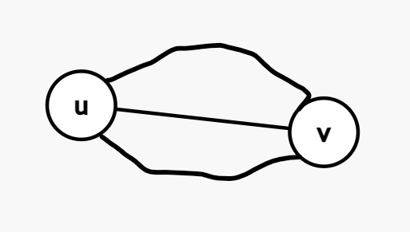
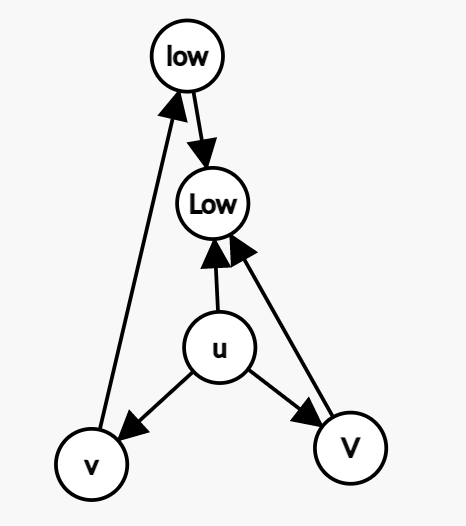
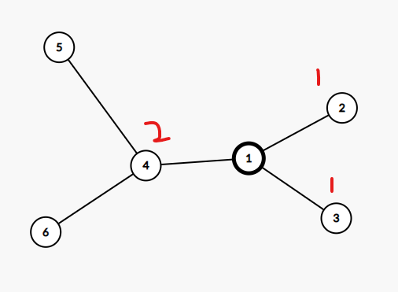
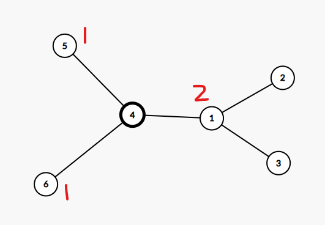
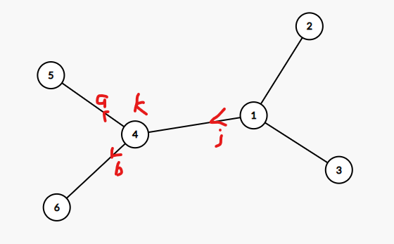
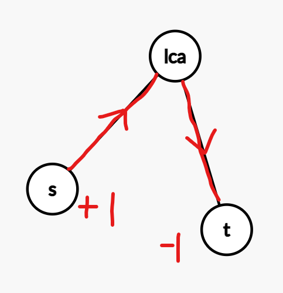
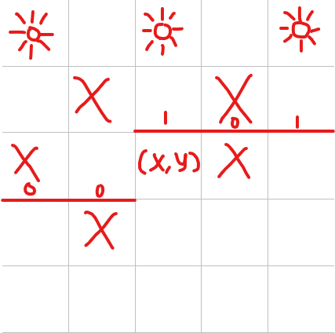

初三和高一写的，平均难度 2800 左右。
题号
tags
CF1515G dfs and similar, graphs, math, number theory
CF521E dfs and similar, graphs
CF549F data structures, divide and conquer
CF1144G dp, greedy
CF1305G bitmasks, brute force, dp, dsu, graphs
CF1430F dp, greedy
CF1498E brute force, graphs, greedy, interactive, sortings
CF1508C bitmasks, brute force, data structures, dfs and similar, dsu, graphs, greedy, trees
CF1516E combinatorics, dp, math
CF1515F constructive algorithms, dfs and similar, dsu, graphs, greedy, trees
CF1519E constructive algorithms, dfs and similar, geometry, graphs, sortings, trees
CF1498D dfs and similar, dp, graphs, implementation
CF1498F bitmasks, data structures, dfs and similar, dp, games, math, trees
CF493E math
CF868E dp, graphs, trees
CF555E dfs and similar, graphs, trees
CF845F bitmasks, dp
CF908G dp, math
CF1548D2 brute force, geometry, math, number theory
CF1548E data structures, divide and conquer, graphs, greedy, math
CF1562E dp, greedy, string suffix structures, strings
CF1562F interactive, math, number theory, probabilities
CF566C dfs and similar, divide and conquer, trees
CF1149C data structures, implementation, trees
给定一张 n n n m m m
有 q q q v , s , t v,s,t v , s , t v v v t ∣ ( s + l ) t | (s+l) t ∣ ( s + l ) l l l
n , m , q ≤ 2 × 1 0 5 , 0 ≤ s < t ≤ 1 0 9 n,m,q \le 2 \times 10^5,0\le s<t\le 10^9 n , m , q ≤ 2 × 1 0 5 , 0 ≤ s < t ≤ 1 0 9 1 0 9 10^9 1 0 9
首先这条路径只能在 v v v
以下所有的路径长度都是在模 t t t
引理：在同一个强连通分量，如果 u → v u\rightarrow v u → v l l l v → u v\rightarrow u v → u − l -l − l
构造：根据强连通性 v → u v\rightarrow u v → u w w w v → u v\rightarrow u v → u w w w t − 1 t-1 t − 1 u → v → u u\rightarrow v\rightarrow u u → v → u ( t − 1 ) ( l + w ) (t-1)(l+w) ( t − 1 ) ( l + w ) − l -l − l
在强连通分量的内部，对于一个长度为 w w w 环上 一个点 u u u u u u gcd ( w , t ) \gcd(w,t) g cd( w , t ) v v v v → u v\rightarrow u v → u u → v u\rightarrow v u → v gcd ( w , t ) \gcd(w,t) g cd( w , t )
以 r r r φ ( u ) \varphi(u) φ ( u ) r r r u u u ( u , v , w ) (u,v,w) ( u , v , w ) φ ( u ) + w − φ ( v ) \varphi(u)+w-\varphi(v) φ ( u ) + w − φ ( v ) x = gcd ( u , v , w ) φ ( u ) + w − φ ( v ) x=\gcd_{(u,v,w)}\varphi(u)+w-\varphi(v) x = g cd( u , v , w ) φ ( u ) + w − φ ( v ) 0 , x , 2 x , 3 x , ⋯ 0,x,2x,3x,\cdots 0 , x , 2 x , 3 x , ⋯ r → u r\rightarrow u r → u ≡ φ ( u ) ( m o d x ) \equiv \varphi(u)\pmod x ≡ φ ( u ) ( m o d x ) x ∣ s x|s x ∣ s
复杂度 O ( n + m ) O(n+m) O ( n + m )
code
1 2 3 4 5 6 7 8 9 10 11 12 13 14 15 16 17 18 19 20 21 22 23 24 25 26 27 28 29 30 31 32 33 34 #include <bits/stdc++.h> #define rep(i, l, r) for(int i = (l); i <= (r); i++) #define per(i, r, l) for(int i = (r); i >= (l); i--) #define mem(a, b) memset(a, b, sizeof a) #define For(i, l, r) for(int i = (l), i##e = (r); i < i##e; i++) #define pb push_back #define upd(a, b) (a = min(a, b)) using namespace std;typedef long long ll;const int N = 2e5 + 5 ;int n, m, q;vector<pair<int , int >> G[N]; int idx, dfn[N], scc[N], stk[N], tp, sid;ll g[N], d[N], gg[N]; int dfs (int u) int low = dfn[u] = ++idx; stk[++tp] = u; for (auto [v, w] : G[u]) if (!dfn[v]) d[v] = d[u] + w, upd (low, dfs (v)); else if (!scc[v]) upd (low, dfn[v]), g[u] = gcd (g[u], d[u] - d[v] + w); if (low == dfn[u]) for (int v = (sid++, 0 ); v ^ u;) v = stk[tp--], scc[v] = sid, gg[sid] = gcd (gg[sid], g[v]); return low; } int main () cin >> n >> m; int u, v, w; rep (i, 1 , m) scanf ("%d%d%d" , &u, &v, &w), G[u].emplace_back (v, w); rep (i, 1 , n) if (!dfn[i]) dfs (i); for (cin >> q; q--; puts (v % gcd (gg[scc[u]], (ll)w) ? "NO" : "YES" )) scanf ("%d%d%d" , &u, &v, &w); }
给定一张 n n n m m m
问在图中能否找到两个点，满足这两个点之间有至少三条点不相交的简单路径，有解要打印三条路径。
n , m ≤ 2 × 1 0 5 n,m \le 2 \times 10^5 n , m ≤ 2 × 1 0 5
考虑 u → v u \rightarrow v u → v

反过来，如果任意两个环都不相交，即仙人掌，那就无解。
至此，得到了有解的充要条件：不是仙人掌。
但为了便于打印路径，采用另一种方法。
设 l o w u low_u l o w u L o w u Low_u L o w u
如果 L o w u = d f n u Low_u = dfn_u L o w u = d f n u
于是存在满足 L o w u < d f n u Low_u < dfn_u L o w u < d f n u u u u
观察这张图，如果 l c a ( v , V ) = u lca(v,V)=u l c a ( v , V ) = u u → L o w u \rightarrow Low u → L o w u → v → l o w → L o w u \rightarrow v \rightarrow low \rightarrow Low u → v → l o w → L o w u → V → L o w u \rightarrow V \rightarrow Low u → V → L o w

只要以 u u u u u u L o w u < d f n u Low_u < dfn_u L o w u < d f n u l c a ( v , V ) = u lca(v, V) = u l c a ( v , V ) = u
在 dfs 过程中第一次找到满足 L o w u < d f n u Low_u < dfn_u L o w u < d f n u u u u
复杂度 O ( n ) O(n) O ( n )
code
1 2 3 4 5 6 7 8 9 10 11 12 13 14 15 16 17 18 19 20 21 22 23 24 25 26 27 28 29 30 31 32 33 34 35 36 37 38 39 40 41 42 43 44 45 46 47 48 49 50 51 52 53 54 55 56 57 58 #include <bits/stdc++.h> #define rep(i, l, r) for(int i = (l); i <= (r); i++) #define per(i, r, l) for(int i = (r); i >= (l); i--) #define mem(a, b) memset(a, b, sizeof a) #define For(i, l, r) for(int i = (l), i##e = (r); i < i##e; i++) #define pb push_back using namespace std;const int N = 2e5 + 5 ;typedef vector <int > vi;int n, m; vi G[N];int idx, dfn[N], fa[N], ma;struct node { int u, fa, U, Fa; node (int uu) { u = fa = U = Fa = uu; } void upd (int uu, int ffa) if (dfn[ffa] < dfn[fa]) U = u, Fa = fa, u = uu, fa = ffa; else if (dfn[ffa] < dfn[Fa]) U = uu, Fa = ffa; } } as (0 ); node dfs (int u) { dfn[u] = ++idx; node lowu (u) ; for (int v : G[u]) if (!dfn[v]) { fa[v] = u; node lowv = dfs (v); lowu.upd (lowv.u, lowv.fa), lowu.upd (lowv.U, lowv.Fa); } else if (dfn[v] < dfn[u] && v ^ fa[u]) lowu.upd (u, v); if (!ma && dfn[lowu.Fa] < dfn[u]) as = lowu, ma = u; return lowu; } vi find (int s, int t) { vi p; while (s ^ t) p.pb (s), s = fa[s]; p.pb (t); return p; } vi p; void print () printf ("%llu " , p.size ()); for (int u : p) printf ("%d " , u); puts ("" ); } int main () cin >> n >> m; int u, v; rep (i, 1 , m) scanf ("%d%d" , &u, &v), G[u].pb (v), G[v].pb (u); rep (i, 1 , n) if (!ma && !dfn[i]) dfs (i); if (ma) { puts ("YES" ); p = find (ma, as.Fa), print (); p = find (as.U, ma), reverse (p.begin (), p.end ()); p.pb (as.Fa), print (); p = find (as.Fa, as.fa); vi t = find (as.u, ma); p.insert (p.end (), t.begin (), t.end ()); reverse (p.begin (), p.end ()), print (); } else puts ("NO" ); return 0 ; }
给定一个长度为 n n n k k k 1 1 1 k k k
n ≤ 3 × 1 0 5 , k ≤ 1 0 6 , a i ≤ 1 0 9 n \le 3 \times 10^5,k \le 10^6,a_i \le 10^9 n ≤ 3 × 1 0 5 , k ≤ 1 0 6 , a i ≤ 1 0 9
先求出前缀和数组 p r e pre p r e
则条件可以写成 p r e r ≡ p r e l − 1 + max ( m o d k ) pre_r \equiv pre_{l-1} + \max \pmod k p r e r ≡ p r e l − 1 + max ( m o d k )
把 i i i vector [ p r e i m o d k ] \text{vector}[pre_i \bmod k] vector [ p r e i m o d k ] k k k x x x
求出整个序列的最大值的位置为 x x x
然后枚举 x x x x x x
因为 x x x O ( n 2 log n ) O(n^2\log n) O ( n 2 log n )
但如果每次枚举左右中较短的一段，则复杂度可降为 O ( n log 2 n ) O(n \log^2 n) O ( n log 2 n )
其实不用真的分治，只需要单调栈求出每个位置作为最大值的极大区间即可。
code
1 2 3 4 5 6 7 8 9 10 11 12 13 14 15 16 17 18 19 20 21 22 23 24 25 26 27 28 29 30 31 32 #include <bits/stdc++.h> #define rep(i, l, r) for(int i = (l); i <= (r); i++) #define per(i, r, l) for(int i = (r); i >= (l); i--) #define mem(a, b) memset(a, b, sizeof a) #define For(i, l, r) for(int i = (l), i##e = (r); i < i##e; i++) #define pb push_back using namespace std;typedef long long ll;const int N = 3e5 + 5 ;int n, K, a[N], L[N], R[N], su[N];vector <int > v[1000000 ]; int main () cin >> n >> K; rep (i, 1 , n) scanf ("%d" , &a[i]); v[0 ].pb (0 ); rep (i, 1 , n) su[i] = (su[i - 1 ] + a[i]) % K, v[su[i]].pb (i); rep (i, 1 , n) for (int & j = L[i] = i - 1 ; j && a[j] <= a[i]; j = L[j]); per (i, n, 1 ) for (int & j = R[i] = i + 1 ; j <= n && a[j] < a[i]; j = R[j]); long long as = 0 ; rep (i, 1 , n) if (i - L[i] < R[i] - i) For (j, L[i], i) { int t = (su[j] + a[i]) % K; #define lb lower_bound #define all v[t].begin(), v[t].end() as += lb (all, R[i]) - lb (all, i); } else For (j, i, R[i]) { int t = ((su[j] - a[i]) % K + K) % K; as += lb (all, i) - lb (all, L[i]); } cout << as - n; return 0 ; }
给定一个长度为 n n n A A A
问能否把它拆成一个严格递增序列和一个严格递减序列，如果有解则输出方案。
n ≤ 2 × 1 0 5 n \le 2 \times 10^5 n ≤ 2 × 1 0 5
设 f i , 0 f_{i,0} f i , 0 i i i A i A_i A i f i , 1 f_{i,1} f i , 1 A i A_i A i
转移有四种：
A i − 1 , A i A_{i-1},A_i A i − 1 , A i A i − 1 < A i A_{i-1} < A_i A i − 1 < A i f i − 1 , 0 → f i , 0 f_{i-1,0} \rightarrow f_{i,0} f i − 1 , 0 → f i , 0 A i − 1 , A i A_{i-1},A_i A i − 1 , A i A i − 1 A_{i-1} A i − 1 A i A_i A i f i − 1 , 1 < A i f_{i-1,1} < A_i f i − 1 , 1 < A i A i − 1 → f i , 0 A_{i-1} \rightarrow f_{i,0} A i − 1 → f i , 0 A i − 1 A_{i-1} A i − 1 A i A_i A i
为了输出方案，记 g i , 0 g_{i,0} g i , 0 A i − 1 A_{i-1} A i − 1 g i , 1 g_{i,1} g i , 1
实现中可以用 pair <int, int> 把 f 和 g 数组压一起。
code
1 2 3 4 5 6 7 8 9 10 11 12 13 14 15 16 17 18 19 20 21 22 23 24 25 26 27 28 29 30 31 32 #include <bits/stdc++.h> #define rep(i, l, r) for(int i = (l); i <= (r); i++) #define per(i, r, l) for(int i = (r); i >= (l); i--) #define mem(a, b) memset(a, b, sizeof a) #define For(i, l, r) for(int i = (l), i##e = (r); i < i##e; i++) #define fi first #define se second #define mp make_pair using namespace std;const int N = 2e5 + 5 ;int n, A[N], in[N];pair <int , int > f[N][2 ], ans; int main () cin >> n; rep (i, 1 , n) scanf ("%d" , &A[i]); f[1 ][0 ].fi = N, f[1 ][1 ].fi = -1 ; rep (i, 2 , n) { f[i][0 ].fi = -1 , f[i][1 ].fi = N; if (A[i - 1 ] < A[i]) f[i][0 ] = {f[i - 1 ][0 ].fi, 0 }; if (A[i - 1 ] > A[i]) f[i][1 ] = {f[i - 1 ][1 ].fi, 1 }; if (f[i - 1 ][1 ].fi < A[i]) f[i][0 ] = max (f[i][0 ], mp (A[i - 1 ], 1 )); if (f[i - 1 ][0 ].fi > A[i]) f[i][1 ] = min (f[i][1 ], mp (A[i - 1 ], 0 )); } if (~f[n][0 ].fi || f[n][1 ].fi < N) { puts ("YES" ); in[n] = ~f[n][0 ].fi ? 0 : 1 ; per (i, n, 2 ) in[i - 1 ] = f[i][in[i]].se; rep (i, 1 , n) printf ("%d " , in[i]); } else puts ("NO" ); return 0 ; }
一张有 n n n a i a_i a i
点 u u u v v v a u & a v = 0 a_u \& a_v = 0 a u & a v = 0
对于点 u u u
直接涂黑，无贡献。
找一个与 u u u v v v u u u a v a_v a v
求涂黑所有点的最大贡献。
n ≤ 2 × 1 0 5 , a i ≤ 2 × 1 0 5 n \le 2 \times 10^5,a_i \le 2 \times 10^5 n ≤ 2 × 1 0 5 , a i ≤ 2 × 1 0 5
首先加入一个点权为 0 0 0
对于每次操作，就从 u u u v v v 0 0 0
设点 u u u d e g r e e u degree_u d e g r e e u
∑ u ∈ V a u ( d e g r e e u − 1 ) = ∑ u ∈ V a u d e g r e e u − ∑ u ∈ V a u = ∑ ( u , v ) ∈ E a u + a v − ∑ u ∈ V a u \sum_{u \in V}a_u(degree_u-1)=\sum_{u \in V}a_udegree_u-\sum_{u \in V}a_u = \sum_{(u,v) \in E}a_u + a_v - \sum_{u \in V}a_u
u ∈ V ∑ a u ( d e g r e e u − 1 ) = u ∈ V ∑ a u d e g r e e u − u ∈ V ∑ a u = ( u , v ) ∈ E ∑ a u + a v − u ∈ V ∑ a u
如果定义 ( u , v ) (u,v) ( u , v ) a u + a v a_u + a_v a u + a v
所以问题转化为求最大生成树。
根据枚举子集的经典结论，边的总数小于 3 18 3^{18} 3 1 8 1.7 × 1 0 8 1.7 \times 10^8 1 . 7 × 1 0 8
考虑 Kruskal 算法，虽然并查集复杂度要乘一个 α ( n ) \alpha(n) α ( n )
首先不可能存下所有边，更不可能排序，所以考虑从大到小枚举边权。
注意到 u , v u,v u , v a u & a v = 0 a_u \& a_v = 0 a u & a v = 0 a u + a v a_u + a_v a u + a v
直接枚举边权的子集就可以得到两个端点。
剩下的正常做 Kruskal 就行了。
复杂度 O ( 3 18 α ( n ) ) O(3^{18}\alpha(n)) O ( 3 1 8 α ( n ) )
当枚举到 a u , a v a_u,a_v a u , a v a u a_u a u u u u u u u U U U a v a_v a v a v a_v a v v v v V V V
任何一个 U U U V V V
考虑一个等价的连边：
在 U U U u 0 u_0 u 0 v 0 v_0 v 0 u 0 u_0 u 0 v 0 v_0 v 0 u 0 u_0 u 0 U U U v 0 v_0 v 0 V V V
对于后两种连边，每个集合只用在第一次访问到时进行，复杂度 O ( 3 18 α ( n ) ) O(3^{18}\alpha(n)) O ( 3 1 8 α ( n ) )
UPD：复杂度不带 O ( 3 18 α ( n ) ) O(3^{18}\alpha(n)) O ( 3 1 8 α ( n ) ) find 的次数不少于 n log n n\log n n log n O ( 1 ) O(1) O ( 1 )
code
1 2 3 4 5 6 7 8 9 10 11 12 13 14 15 16 17 18 19 20 21 22 23 24 25 26 27 28 29 30 31 32 33 34 35 36 37 38 39 40 #include <bits/stdc++.h> #define rep(i, l, r) for(int i = (l); i <= (r); i++) #define per(i, r, l) for(int i = (r); i >= (l); i--) #define mem(a, b) memset(a, b, sizeof a) #define For(i, l, r) for(int i = (l), i##e = (r); i < i##e; i++) #define upd(a, b) (a = min(a, b)) using namespace std;const int N = 1 << 18 ;typedef long long ll;int n, a[N], fa[N], sz[N], vis[N];vector <int > nds[N]; int find (int x) return x == fa[x] ? x : fa[x] = find (fa[x]); }int main () cin >> n; ll as = 0 ; rep (i, 1 , n) { scanf ("%d" , &a[i]), as -= a[i]; nds[a[i]].push_back (i); } nds[0 ].push_back (0 ); rep (i, 0 , n) fa[i] = i, sz[i] = 1 ; per (S, N - 1 , 1 ) for (int T = S; T > S / 2 ; --T &= S) { if (nds[T].empty () || nds[S ^ T].empty ()) continue ; auto mrg = [&](int u, int v) { u = find (u), v = find (v); if (u == v) return ; if (sz[u] < sz[v]) swap (u, v); fa[v] = u, sz[u] += sz[v]; as += S; if (sz[u] == n + 1 ) cout << as, exit (0 ); }; mrg (nds[T][0 ], nds[S ^ T][0 ]); if (!vis[T]) for (int u : nds[T]) mrg (u, nds[S ^ T][0 ]); if (!vis[S ^ T]) for (int v : nds[S ^ T]) mrg (nds[T][0 ], v); vis[T] = vis[S ^ T] = 1 ; } puts ("0" ); return 0 ; }
你有一把枪，枪的弹匣量为 k k k
有 n n n i i i [ l i , r i ] [l_i,r_i] [ l i , r i ] a i a_i a i ( r i ≤ l i + 1 ) (r_i \le l_{i+1}) ( r i ≤ l i + 1 )
在保证通关的情况下，需要的最少的子弹数为多少。
n ≤ 2000 , k ≤ 1 0 9 , l i ≤ r i ≤ 1 0 9 , a i ≤ 1 0 9 n \le 2000,k \le 10^9, l_i \le r_i \le 10^9,a_i \le 10^9 n ≤ 2 0 0 0 , k ≤ 1 0 9 , l i ≤ r i ≤ 1 0 9 , a i ≤ 1 0 9
考虑什么时候会换弹，要么是当前子弹打完了，而这波怪还没打完，称之为一类换弹；要么是当前这波怪已经打完了，但为了通关而换新弹匣 ，称之为二类换弹。
如果所有二类换弹在哪一波都是确定的，只要按时间线扫描一遍就可以算出所有一类换弹的时间。
因此设 f i f_i f i i i i i i i i + 1 i + 1 i + 1 r j r_j r j j j j j j j f j f_j f j ans。
复杂度 O ( n 2 ) O(n^2) O ( n 2 )
code
1 2 3 4 5 6 7 8 9 10 11 12 13 14 15 16 17 18 19 20 21 22 23 24 25 26 27 28 29 30 31 #include <bits/stdc++.h> #define rep(i, l, r) for(int i = (l); i <= (r); i++) #define per(i, r, l) for(int i = (r); i >= (l); i--) #define mem(a, b) memset(a, b, sizeof a) #define upd(a, b) (a = min(a, b)) using namespace std;const int N = 2005 ;typedef long long ll;int n, K;int l[N], r[N], a[N];ll f[N]; int main () mem (f, 63 ), f[0 ] = 0 ; cin >> n >> K; rep (i, 1 , n) scanf ("%d%d%d" , &l[i], &r[i], &a[i]); rep (i, 0 , n - 1 ) { int nw = K; rep (j, i + 1 , n) { int t = (a[j] - nw + K - 1 ) / K; if (t > r[j] - l[j]) break ; nw += t * K - a[j]; f[i] += a[j]; if (j == n) upd (f[j], f[i]); else if (t < l[j + 1 ] - l[j]) upd (f[j], f[i] + nw); } } if (f[n] < 0x3f3f3f3f3f3f3f3f ) cout << f[n]; else puts ("-1" ); return 0 ; }
有一张 n n n
不会给这张竞赛图，但会给每个点的入度 k i k_i k i
还可以通过交互 询问从 u u u v v v
定义一个点对 ( u , v ) (u,v) ( u , v ) ∣ k u − k v ∣ |k_u-k_v| ∣ k u − k v ∣
求所有双向可达的点对中价值最大的一对，或者输出无解。如果有多对，输出任意一对。
n ≤ 500 n \le 500 n ≤ 5 0 0
考虑一对点 ( u , v ) (u,v) ( u , v ) u , v u,v u , v u → v u \rightarrow v u → v
如果 v v v u u u ∃ S , u ∈ S ∧ ∀ x ∈ S , y ∉ S , x → y \exists S,u \in S \land \forall x \in S, y \not \in S,x \rightarrow y ∃ S , u ∈ S ∧ ∀ x ∈ S , y ∈ S , x → y S S S S S S
∴ k v ≥ ∣ S ∣ , k u < ∣ S ∣ ⇒ k u < k v \therefore k_v \ge |S|,k_u < |S| \Rightarrow k_u < k_v ∴ k v ≥ ∣ S ∣ , k u < ∣ S ∣ ⇒ k u < k v
得到一个结论：如果一对点不双向可达，那么入度大的一定无法到达入度小的。
把所有点对按价值从大到小依次询问，每次询问入度大的能否到达入度小的，如果可以，就直接输出这一对。
如果到最后都没有回答“是”，那么输出无解。
复杂度 O ( n 2 ) O(n^2) O ( n 2 )
code
1 2 3 4 5 6 7 8 9 10 11 12 13 14 15 16 17 18 19 20 21 22 23 24 25 26 27 28 29 30 #include <bits/stdc++.h> #define rep(i, l, r) for(int i = (l); i <= (r); i++) #define per(i, r, l) for(int i = (r); i >= (l); i--) #define mem(a, b) memset(a, b, sizeof a) #define For(i, l, r) for(int i = (l), i##e = (r); i < i##e; i++) using namespace std;const int N = 1000 ;char ch[N];struct Qry { int x, y, v; bool operator <(const Qry& b)const { return v > b.v; } } q[N * N]; vector <int > v[N]; int n, idx, k[N];int main () scanf ("%d" , &n); rep (i, 1 , n) scanf ("%d" , &k[i]); rep (i, 1 , n) rep (j, i + 1 , n) q[++idx] = k[i] < k[j] ? (Qry){ j, i, k[j] - k[i] } : (Qry){ i, j, k[i] - k[j] }; sort (q + 1 , q + idx + 1 ); rep (i, 1 , idx) { printf ("? %d %d\n" , q[i].x, q[i].y); fflush (stdout); scanf ("%s" , ch); if (ch[0 ] == 'Y' ) printf ("! %d %d\n" , q[i].x, q[i].y), fflush (stdout), exit (0 ); } puts ("! 0 0" ), fflush (stdout); return 0 ; }
考虑拓扑序最小的几个强连通分量 的并集 S S S S S S S S S S S S ( ∣ S ∣ 2 ) \binom {|S|}2 ( 2 ∣ S ∣ ) 反之亦然 。
把所有点按入度从小到大排序，如果前 m m m ( m 2 ) \binom m2 ( 2 m ) m m m 并且不会漏掉 ，这样就可以分离出所有的强连通分量，直接统计答案即可。
复杂度 O ( n ) O(n) O ( n ) 无需询问 。
UPD: 这个结论叫 兰道定理 ，练习题 「2021 集训队互测」基础图论练习题 。
code
1 2 3 4 5 6 7 8 9 10 11 12 13 14 15 16 17 18 19 20 21 22 23 24 25 26 27 28 29 30 31 32 #include <bits/stdc++.h> #define rep(i, l, r) for(int i = (l); i <= (r); i++) #define per(i, r, l) for(int i = (r); i >= (l); i--) #define mem(a, b) memset(a, b, sizeof a) #define For(i, l, r) for(int i = (l), i##e = (r); i < i##e; i++) #define fi first #define se second #define mp make_pair using namespace std;const int N = 505 ;typedef pair <int , int > P;int n; P a[N];int main () cin >> n; rep (i, 1 , n) scanf ("%d" , &a[i].fi), a[i].se = i; sort (a + 1 , a + n + 1 ); int su = 0 ; P mi (n, 0 ) , ma (-1 , 0 ) ; pair <int , P> as; rep (i, 1 , n) { su += a[i].fi; mi = min (mi, a[i]), ma = max (ma, a[i]); if (su == i * (i - 1 ) / 2 ) { if (mi.se ^ ma.se) as = max (as, mp (ma.fi - mi.fi, mp (mi.se, ma.se))); mi.fi = n, ma.fi = -1 ; } } if (as.se.fi) printf ("! %d %d\n" , as.se.fi, as.se.se); else puts ("! 0 0" ); fflush (stdout); return 0 ; }
有一张 n n n m m m
你需要给剩下的边确定边权，使得所有边的权值 异或和为 0 0 0
求出所有方案中最小生成树权值的最小值。
n ≤ 2 × 1 0 5 , m ≤ min { 2 × 1 0 5 , ( n 2 ) − 1 } n \le 2 \times 10^5,m \le \min\{2 \times 10^5,\binom n2-1\} n ≤ 2 × 1 0 5 , m ≤ min { 2 × 1 0 5 , ( 2 n ) − 1 }
下面原图 指给定的 m m m 补图 指剩下的边构成的图，MST 指最小生成树。
引理：最优解中补图至多有一条权值非 0 0 0
证明：考虑两条补图边 e 1 , e 2 e_1,e_2 e 1 , e 2 w 1 , w 2 w_1,w_2 w 1 , w 2 0 0 0
如果它们都不在 MST 上，把 e 1 e_1 e 1 0 0 0 e 2 e_2 e 2 e 1 e_1 e 1
如果它们都在 MST 上，把 e 1 e_1 e 1 0 0 0 e 2 e_2 e 2 e 1 e_1 e 1 w 1 ⊕ w 2 ≤ w 1 + w 2 w_1 \oplus w_2 \le w_1 + w_2 w 1 ⊕ w 2 ≤ w 1 + w 2
如果它们中的一条在 MST 上，一条不在，不妨设 e 1 e_1 e 1 e 1 e_1 e 1 0 0 0 e 2 e_2 e 2 e 1 e_1 e 1
综上，如果存在两条权值大于 0 0 0 0 0 0
所以补图中有一条特殊边 的权值恰好为给定的 m m m 0 0 0
容易想到枚举一下特殊边在不在 MST 上。
先用 DFS 求出补图的生成森林，用 set 优化枚举未访问的点可以做到 O ( m log n ) O(m\log n) O ( m log n )
如果补图中存在环，那么补图中一定有边不在 MST 上，故特殊边一定不在 MST 上。把求出的生成森林加入原图后，答案即为该图的最小生成树，复杂度 O ( m log m ) O(m\log m) O ( m log m )
如果不存在环，那么 n n n O ( m ) O(\sqrt m) O ( m ) O ( m log m + n m α ( n ) ) O(m \log m + nm\alpha(n)) O ( m log m + n m α ( n ) ) O ( m log m + n 2 α ( n ) ) = O ( m log m ) O(m\log m + n^2\alpha(n))=O(m\log m) O ( m log m + n 2 α ( n ) ) = O ( m log m )
code
1 2 3 4 5 6 7 8 9 10 11 12 13 14 15 16 17 18 19 20 21 22 23 24 25 26 27 28 29 30 31 32 33 34 35 36 37 38 39 40 41 42 43 44 45 46 47 48 49 50 51 52 53 54 55 56 57 58 59 60 61 62 63 64 65 #include <bits/stdc++.h> #define rep(i, l, r) for(int i = (l); i <= (r); i++) #define per(i, r, l) for(int i = (r); i >= (l); i--) #define mem(a, b) memset(a, b, sizeof a) #define For(i, l, r) for(int i = (l), i##e = (r); i < i##e; i++) #define pb push_back using namespace std;const int N = 2e5 + 5 ;typedef long long ll;int n, m, fa[N], xorsu, eid, tid;int find (int x) return x ^ fa[x] ? fa[x] = find (fa[x]) : x; }int mrg (int u, int v) if ((u = find (u)) ^ (v = find (v))) return fa[u] = v; return 0 ; } vector <int > G[N]; struct edge { int u, v, w; bool operator <(const edge& b)const { return w < b.w; } } e[N], t[N]; set <int > s; void dfs (int u) s.erase (u); For (i, 0 , G[u].size () - 1 ) { int v = G[u][i], nxt = G[u][i + 1 ]; while (!s.empty () && *s.rbegin () > v) { int vv = *s.upper_bound (v); if (vv >= nxt) break ; t[++tid] = {u, vv}, dfs (vv); } } } int main () cin >> n >> m; rep (i, 1 , m) { scanf ("%d%d%d" , &e[i].u, &e[i].v, &e[i].w), xorsu ^= e[i].w; G[e[i].u].pb (e[i].v), G[e[i].v].pb (e[i].u); } rep (i, 1 , n) G[i].pb (0 ), G[i].pb (n + 1 ), sort (G[i].begin (), G[i].end ()), s.insert (i); while (!s.empty ()) dfs (*s.begin ()); sort (e + 1 , e + m + 1 ); rep (i, 1 , n) fa[i] = i; rep (i, 1 , m) if (mrg (e[i].u, e[i].v)) e[++eid] = e[i]; if (tid < n * (n - 1ll ) / 2 - m) { rep (i, 1 , n) fa[i] = i; rep (i, 1 , tid) mrg (t[i].u, t[i].v); ll as = 0 ; rep (i, 1 , eid) if (mrg (e[i].u, e[i].v)) as += e[i].w; cout << as; } else { ll as = 1e18 ; rep (i, 0 , tid) { rep (j, 1 , n) fa[j] = j; rep (j, 1 , tid) if (j ^ i) mrg (t[j].u, t[j].v); ll su = i ? 0 : xorsu; rep (j, 1 , eid) if (mrg (e[j].u, e[j].v)) su += e[j].w; as = min (as, su); } cout << as; } return 0 ; }
给定 n , k n,k n , k i ∈ [ 1 , k ] i \in [1,k] i ∈ [ 1 , k ] n n n i i i { 1 , 2 , ⋯ , n } \{1,2,\cdots,n\} { 1 , 2 , ⋯ , n }
答案对 1 0 9 + 7 10^9+7 1 0 9 + 7
n ≤ 1 0 9 , k ≤ 200 n \le 10^9,k \le 200 n ≤ 1 0 9 , k ≤ 2 0 0
先考虑这样一个问题：给定一个排列 P P P { 1 , 2 , ⋯ , n } \{1,2,\cdots,n\} { 1 , 2 , ⋯ , n }
把排列 P P P i i i i − 1 i-1 i − 1
这样，如果 P P P x x x n − x n-x n − x
涉及到点数和循环数不难想到第一类斯特林数 。
i i i [ n n − i ] + [ n n − i + 2 ] + [ n n − i + 4 ] + ⋯ {n \brack n-i}+{n \brack n-i+2}+{n \brack n-i+4} + \cdots [ n − i n ] + [ n − i + 2 n ] + [ n − i + 4 n ] + ⋯
问题是 n n n
由于 i i i 2 i 2i 2 i P P P 2 i 2i 2 i j j j j ≠ P j j \ne P_j j = P j
可以枚举有多少个 j j j j ≠ P j j \ne P_j j = P j x x x ( n x ) f x , x − i \binom nxf_{x,x-i} ( x n ) f x , x − i
其中 f i , j f_{i,j} f i , j i i i 错排 循环节为 j j j
f i , j = [ i j ] − ∑ k = 1 j ( i k ) f i − k , j − k f_{i,j}={i \brack j}-\sum_{k=1}^j\binom ikf_{i-k,j-k}
f i , j = [ j i ] − k = 1 ∑ j ( k i ) f i − k , j − k
复杂度 O ( k 3 ) O(k^3) O ( k 3 )
code
1 2 3 4 5 6 7 8 9 10 11 12 13 14 15 16 17 18 19 20 21 22 23 24 25 26 27 28 29 30 31 32 33 34 35 36 37 38 39 40 41 42 43 #include <bits/stdc++.h> #define rep(i, l, r) for(int i = (l); i <= (r); i++) #define per(i, r, l) for(int i = (r); i >= (l); i--) #define mem(a, b) memset(a, b, sizeof a) #define pb push_back using namespace std;typedef long long ll;const int N = 205 ;const ll P = 1e9 + 7 ;int n, K, C[N * 2 ][N * 2 ];ll f[N * 2 ][N], as[N]; ll Pow (ll a, int n, ll r = 1 ) { for (; n; n /= 2 , a = a * a % P) if (n & 1 ) r = r * a % P; return r; } ll calc (int x) { ll a = 1 , b = 1 ; while (x) b = b * x-- % P, a = a * (n - x) % P; return a * Pow (b, P - 2 ) % P; } int main () cin >> n >> K; f[0 ][0 ] = 1 ; rep (i, 1 , K * 2 ) rep (j, 1 , K) f[i][j] = (f[i - 1 ][j - 1 ] + (i - 1 ) * f[i - 1 ][j]) % P; rep (i, 0 , K * 2 ) { C[i][0 ] = 1 ; rep (j, 1 , i) C[i][j] = (C[i - 1 ][j - 1 ] + C[i - 1 ][j]) % P; } rep (i, 1 , K * 2 ) rep (j, 1 , i) rep (k, 1 , j) (f[i][j] -= C[i][k] * f[i - k][j - k]) %= P; rep (i, 0 , K) { rep (j, i, i * 2 ) (as[i] += f[j][j - i] * calc (j)) %= P; if (i >= 2 ) (as[i] += as[i - 2 ]) %= P; if (i) printf ("%lld " , (as[i] + P) % P); } return 0 ; }
给定一张 n n n m m m x x x a i a_i a i
如果一条边 ( u , v ) (u,v) ( u , v ) a u + a v ≥ x a_u+a_v \ge x a u + a v ≥ x u , v u,v u , v a u + a v − x a_u+a_v-x a u + a v − x
判断这张图是否可以缩成一个点并给出方案。
n , m ≤ 3 × 1 0 5 , x , a i ≤ 1 0 9 n,m \le 3 \times 10^5,x,a_i \le 10^9 n , m ≤ 3 × 1 0 5 , x , a i ≤ 1 0 9
首先将每个点的点权减去 x x x a u + a v ≥ − x a_u + a_v \ge -x a u + a v ≥ − x a u + a v a_u + a_v a u + a v
结论：这张图可以缩成一个点的充要条件是点权和大于等于 − x -x − x
必要性显然，充分性可以考虑这个构造：每次选择点权最大的点 u u u
构造的正确性可以考虑反证法，设这条边为 ( u , v ) (u,v) ( u , v ) a u + a v < − x a_u+a_v<-x a u + a v < − x
进一步 ∵ a v ≥ − x , ∴ a u < 0 \because a_v \ge -x,\therefore a_u < 0 ∵ a v ≥ − x , ∴ a u < 0
由于 a u a_u a u a u + a v ≥ ∑ a i ≥ − x a_u+a_v \ge \sum a_i \ge -x a u + a v ≥ ∑ a i ≥ − x
至此，已经得到一个做法。
但还有更简单的做法，根据上面结论，任意求一棵生成树都有可行方案。
先从叶子向根依次考虑每个结点，如果这个结点权值非负，则选择它和它父亲的连边，再从根向叶子依次考虑每个结点，如果它和它父亲的连边还没选，则选择这条边。
证明考虑数学归纳法即可。
在实现中不必 DFS 两遍，DFS 过程中把没选的边压栈即可。
复杂度 O ( n ) O(n) O ( n )
code
1 2 3 4 5 6 7 8 9 10 11 12 13 14 15 16 17 18 19 20 21 22 23 24 25 26 27 #include <bits/stdc++.h> #define rep(i, l, r) for(int i = (l); i <= (r); i++) #define eb emplace_back using namespace std;const int N = 3e5 + 5 ;int n, m, x, vis[N], as[N], L, R;long long a[N], su;vector <pair <int , int >> G[N]; void dfs (int u) vis[u] = 1 ; for (auto [v, i] : G[u]) if (!vis[v]) dfs (v), a[v] >= 0 ? a[u] += a[v], as[L++] = i : as[R--] = i; } int main () cin >> n >> m >> x; rep (i, 1 , n) scanf ("%lld" , &a[i]), su += a[i] -= x; int u, v; rep (i, 1 , m) scanf ("%d%d" , &u, &v), G[u].eb (v, i), G[v].eb (u, i); if (su + x < 0 ) puts ("NO" ), exit (0 ); puts ("YES" ), L = 2 , R = n, dfs (1 ); rep (i, 2 , n) printf ("%d\n" , as[i]); return 0 ; }
给定平面上的 n n n ( a i b i , c i d i ) (\frac {a_i}{b_i},\frac {c_i}{d_i}) ( b i a i , d i c i ) ( x , y ) (x,y) ( x , y ) 派生点 为点 ( x + 1 , y ) (x+1,y) ( x + 1 , y ) ( x , y + 1 ) (x,y+1) ( x , y + 1 )
两个点 A , B A,B A , B A A A B B B
求出最大匹配的大小和任意一种方案。
n ≤ 2 × 1 0 5 , 1 ≤ a i , b i , c i , d i ≤ 1 0 9 n \le 2 \times 10^5,1 \le a_i,b_i,c_i,d_i \le 10^9 n ≤ 2 × 1 0 5 , 1 ≤ a i , b i , c i , d i ≤ 1 0 9
两个第一象限的点在同一条过原点的直线上等价于两个点的横纵坐标之比相等。
定义一个点 ( x , y ) (x,y) ( x , y ) 派生值 为 x + 1 y \frac {x+1}y y x + 1 x y + 1 \frac x{y+1} y + 1 x
两个点 A , B A,B A , B
把所有的派生值抽象成点，给定的点抽象成边，匹配条件进一步转化为两条边拥有公共顶点 。
引理：一个连通 无向图能够给每条边定向使得每个点入度为偶数当且仅当边数为偶数。
证明：边数为奇数显然不行，下面给出边数为偶数时的构造：
先建树 DFS 树，所有反向边都向上，如果两个端点都在点 u u u u u u
通过引理不难推出一个边数为 m m m ⌊ m 2 ⌋ \lfloor \frac m2 \rfloor ⌊ 2 m ⌋
只需要对每个连通块做一遍即可。
最后一个问题：派生值是分子分母都是 1 0 18 10^{18} 1 0 1 8
一种方法是转 __int128 交叉相乘比较大小。其实不一定要按分数值排序，双关键字排序同样能实现离散化，先约分，再以分子、分母为两关键字比较则是另一种更快的方法。
code
1 2 3 4 5 6 7 8 9 10 11 12 13 14 15 16 17 18 19 20 21 22 23 24 25 26 27 28 29 30 31 32 33 34 35 36 37 38 39 40 41 42 43 44 45 46 47 48 49 50 51 52 53 54 55 56 57 58 #include <bits/stdc++.h> #define rep(i, l, r) for(int i = (l); i <= (r); i++) #define per(i, r, l) for(int i = (r); i >= (l); i--) #define mem(a, b) memset(a, b, sizeof a) #define For(i, l, r) for(int i = (l), i##e = (r); i < i##e; i++) #define pb push_back #define eb emplace_back using namespace std;const int N = 4e5 + 5 ;typedef long long ll;ll K1[N], K2[N]; int n, ord[N], id[N];vector <pair <int , int >> G[N]; vector <pair <int , int >> as; int idx, dfn[N], sz[N];void add (int u, int v, int i) G[u].eb (v, i), G[v].eb (u, i); } void dfs (int u, int f) dfn[u] = ++idx; int lst = 0 ; auto ins = [&](int x) { if (lst) as.eb (lst, x), lst = 0 ; else lst = x; }; for (auto [v, w] : G[u]) if (!dfn[v]) { dfs (v, w), sz[u] += sz[v]; if (~sz[v] & 1 ) ins (w); } else if (dfn[v] > dfn[u]) ins (w); else sz[v]++; if (lst && f) as.eb (lst, f); } int main () cin >> n; int a, b, c, d; rep (i, 1 , n) { scanf ("%d%d%d%d" , &a, &b, &c, &d); K1[i * 2 - 1 ] = ll (a + b) * d, K1[i * 2 ] = (ll)a * d; K2[i * 2 - 1 ] = (ll)b * c, K2[i * 2 ] = b * ll (c + d); } n *= 2 ; rep (i, 1 , n) { ord[i] = i; ll g = __gcd(K1[i], K2[i]); K1[i] /= g, K2[i] /= g; } auto cmp = [](int x, int y) { return K1[x] ^ K1[y] ? K1[x] < K1[y] : K2[x] < K2[y]; }; sort (ord + 1 , ord + n + 1 , cmp); rep (i, 1 , n) id[i] = lower_bound (ord + 1 , ord + n + 1 , i, cmp) - ord; rep (i, 1 , n / 2 ) add (id[i * 2 - 1 ], id[i * 2 ], i); rep (i, 1 , n) dfs (i, 0 ); cout << as.size () << endl; for (auto [u, v] : as) printf ("%d %d\n" , u, v); return 0 ; }
有一个变量 k k k 0 0 0
对于时刻 i = 1 , 2 , 3 , ⋯ , n i=1,2,3,\cdots,n i = 1 , 2 , 3 , ⋯ , n t i , x i , y i t_i,x_i,y_i t i , x i , y i
若 t i = 1 t_i=1 t i = 1 a ∈ [ 0 , y i ] a \in [0,y_i] a ∈ [ 0 , y i ] a a a k = ⌈ k + x i ⌉ k=\lceil k + x_i \rceil k = ⌈ k + x i ⌉
若 t i = 2 t_i=2 t i = 2 a ∈ [ 0 , y i ] a \in [0,y_i] a ∈ [ 0 , y i ] a a a k = ⌈ k ⋅ x i ⌉ k=\lceil k \cdot x_i \rceil k = ⌈ k ⋅ x i ⌉
其中 x i x_i x i 实数 。
对于每个 j ∈ [ 1 , m ] j \in [1,m] j ∈ [ 1 , m ] k = j k=j k = j
n ≤ 200 , y i ≤ m ≤ 1 0 5 n \le 200,y_i \le m \le 10^5 n ≤ 2 0 0 , y i ≤ m ≤ 1 0 5
对于 t i = 1 t_i=1 t i = 1 0 < x i ≤ m 0 < x_i \le m 0 < x i ≤ m t i = 2 t_i=2 t i = 2 1 < x i ≤ m 1 < x_i \le m 1 < x i ≤ m
对于每个时刻 i i i o k j ok_j o k j i i i k = j k=j k = j
设 n e x t j = { ⌈ j + x i ⌉ ( t i = 1 ) ⌈ j ⋅ x i ⌉ ( t i = 2 ) next_j=\begin{cases}\lceil j + x_i \rceil&(t_i=1)\\\lceil j \cdot x_i \rceil&(t_i=2)\end{cases} n e x t j = { ⌈ j + x i ⌉ ⌈ j ⋅ x i ⌉ ( t i = 1 ) ( t i = 2 )
因为 ∀ j ≠ k , n e x t j ≠ n e x t k \forall j \ne k,next_j \ne next_k ∀ j = k , n e x t j = n e x t k j → n e x t j j \rightarrow next_j j → n e x t j
假设一条链上的结点分别为 v 1 , v 2 , v 3 , ⋯ , v s v_1,v_2,v_3,\cdots,v_s v 1 , v 2 , v 3 , ⋯ , v s
对于 v j v_j v j ∃ k ∈ [ j − y i , j ) \exist k \in [j-y_i,j) ∃ k ∈ [ j − y i , j ) o k k = 1 ok_k=1 o k k = 1 i i i k k k v j v_j v j
对每条链扫描一遍即可求出在第 i i i k k k
复杂度 O ( n m ) O(nm) O ( n m )
code
1 2 3 4 5 6 7 8 9 10 11 12 13 14 15 16 17 18 19 20 21 22 23 24 25 26 27 28 29 30 31 32 33 34 35 36 37 38 39 40 41 #include <bits/stdc++.h> #define rep(i, l, r) for(int i = (l); i <= (r); i++) #define per(i, r, l) for(int i = (r); i >= (l); i--) #define mem(a, b) memset(a, b, sizeof a) #define For(i, l, r) for(int i = (l), i##e = (r); i < i##e; i++) #define upd(a, b) (a = min(a, b)) using namespace std;typedef long long ll;const int N = 1e5 , M = N + 5 ;int n, m, f[M], nxt[M], vis[M], ok[M];int main () mem (f, -1 ); int t, y; ll x; cin >> n >> m; f[0 ] = 0 ; rep (k, 1 , n) { scanf ("%d%lld%d" , &t, &x, &y); if (t == 1 ) { x = (x + N - 1 ) / N; rep (i, 0 , m) nxt[i] = min (i + x, m + 1ll ); } else { nxt[0 ] = m + 1 ; rep (i, 1 , m) nxt[i] = min ((i * x + N - 1 ) / N, m + 1ll ); } mem (vis, 0 ); rep (i, 0 , m) if (!vis[i]) { vector <int > v; for (int j = i; j <= m; j = nxt[j]) vis[j] = 1 , v.push_back (j); int cnt = 0 ; For (j, 0 , v.size ()) { if (cnt) ok[v[j]] = 1 ; cnt += f[v[j]] != -1 ; if (j >= y) cnt -= f[v[j - y]] != -1 ; } } rep (i, 0 , m) if (!~f[i] && ok[i]) f[i] = k; } rep (i, 1 , m) printf ("%d " , f[i]); return 0 ; }
给定一棵 n n n k k k a i a_i a i
在确定根之后，两个玩家轮流选择任意一个存在 k k k u u u u u u u u u k k k
最后没有物品可取的人输。
问当每个结点作为根时，谁必胜。
n ≤ 1 0 5 , k ≤ 20 , a i ≤ 1 0 9 n \le 10^5, k \le 20,a_i \le 10^9 n ≤ 1 0 5 , k ≤ 2 0 , a i ≤ 1 0 9
当 k = 1 k=1 k = 1 阶梯 NIM 游戏 。
设根结点深度为 0 0 0 a i a_i a i 0 0 0
对于一般的情况，先手必胜当且仅当
⨁ ⌊ d e p t h u k ⌋ is odd a u ≠ 0 \bigoplus_{\big\lfloor \frac {depth_u}k \big\rfloor \text{ is odd}}a_u \ne 0
⌊ k d e p t h u ⌋ is odd ⨁ a u = 0
设 f u , i f_{u,i} f u , i u u u d e p t h v − d e p t h u ≡ i ( m o d 2 k ) depth_v - depth_u \equiv i \pmod {2k} d e p t h v − d e p t h u ≡ i ( m o d 2 k ) v v v
然后换根 DP 一下即可。
复杂度 O ( n k ) O(nk) O ( n k )
code
1 2 3 4 5 6 7 8 9 10 11 12 13 14 15 16 17 18 19 20 21 22 23 24 25 26 27 28 29 30 31 32 33 34 35 #include <bits/stdc++.h> #define rep(i, l, r) for(int i = (l); i <= (r); i++) #define per(i, r, l) for(int i = (r); i >= (l); i--) #define mem(a, b) memset(a, b, sizeof a) #define For(i, l, r) for(int i = (l), i##e = (r); i < i##e; i++) using namespace std;typedef long long ll;const int N = 1e5 + 5 ;int n, K, a[N];ll f[N][40 ], ans[N]; vector <int > G[N]; void add (int u, int v) For (i, 0 , K) f[u][(i + 1 ) % K] ^= f[v][i]; } void dfs (int u, int fa) f[u][0 ] = a[u]; for (int v : G[u]) if (v ^ fa) dfs (v, u), add (u, v); } void Dfs (int u, int fa) For (i, K / 2 , K) ans[u] ^= f[u][i]; for (int v : G[u]) if (v ^ fa) add (u, v), add (v, u), Dfs (v, u), add (v, u), add (u, v); } int main () cin >> n >> K, K *= 2 ; int u, v; rep (i, 2 , n) { scanf ("%d%d" , &u, &v); G[u].push_back (v), G[v].push_back (u); } rep (i, 1 , n) scanf ("%d" , &a[i]); dfs (1 , 0 ), Dfs (1 , 0 ); rep (i, 1 , n) printf ("%d " , ans[i] != 0 ); return 0 ; }
原题题意：给你三个正整数 a a a b b b c c c 非负整系数 多项式 F F F F ( a ) = b ∧ F ( b ) = c F(a)=b \land F(b)=c F ( a ) = b ∧ F ( b ) = c
1 ≤ a , b , c ≤ 1 0 18 1 \le a, b, c \le 10^{18} 1 ≤ a , b , c ≤ 1 0 1 8
若 a = 1 , b = 1 a=1,b=1 a = 1 , b = 1
否则因为非负整系数 的限制，多项式系数是 log \log log
我们考虑一个更一般的问题：问多少个非负整系数 多项式 F F F
F ( a ) = x ∧ F ( b ) = y ∧ x ≤ b F(a)=x \land F(b)=y \land x \le b
F ( a ) = x ∧ F ( b ) = y ∧ x ≤ b
设 F F F V V V
根据 F ( a ) = x F(a)=x F ( a ) = x F ( b ) = y F(b)=y F ( b ) = y V ≤ x , V ≡ y ( m o d b ) V \le x, V \equiv y\ (mod\ b) V ≤ x , V ≡ y ( m o d b )
分两种情况。
当 x = b ∧ b ∣ y x=b \land b\ |\ y x = b ∧ b ∣ y V = 0 ∨ V = x V=0 \lor V=x V = 0 ∨ V = x
若 V = x V=x V = x F ( a ) = x F(a)=x F ( a ) = x F F F F ( x ) = V F(x)=V F ( x ) = V x ≠ y x \ne y x = y
另一种情况，因为 F ( a ) − V = x − V F(a)-V=x-V F ( a ) − V = x − V a a a x − V x-V x − V
否则令 G ( x ) = F ( x ) − V x G(x)=\dfrac{F(x)-V}x G ( x ) = x F ( x ) − V G ( a ) = x − V a , G ( b ) = y − V b G(a)=\dfrac{x-V}a,G(b)=\dfrac{y-V}b G ( a ) = a x − V , G ( b ) = b y − V
显然 x − V a ≤ x ≤ b \dfrac{x-V}a \le x \le b a x − V ≤ x ≤ b
当 x < b ∨ b ∤ y x < b \lor b \not |\ y x < b ∨ b ∣ y V = y m o d b V=y \mod b V = y m o d b
边界条件是 x y = 0 xy=0 x y = 0 F ( x ) = 0 F(x)=0 F ( x ) = 0
然后就可以求出多项式的数量了。
code
1 2 3 4 5 6 7 8 9 10 11 typedef long long ll;ll a, b, c; find(ll x, ll y) { if (!x || !y) return 0 ; ll v = y % b; return ((x - v) % a ? 0 : find((x - v) / a, (y - v) / b)) + (x == y); } main() { scanf ("%lld%lld%lld" , &a, &b, &c); if (a == 1 && b == 1 ) puts (c > 1 ? "0" : "inf" ); else printf ("%d" , find(b, c)); }
如何求次数最高的前提下字典序最小 的多项式？
分析递归过程，每个次数的合法多项式最多一个 ，递归时优先选择次数高的就行了。
code
1 2 3 4 5 6 7 8 9 10 11 12 13 14 15 16 17 18 19 typedef long long ll;cnt, ans; ll a, b, c, A[100 ]; find(ll x, ll y, int d) { if (!x || !y) return ; ll v = A[d] = y % b; if ((x - v) % a == 0 ) find((x - v) / a, (y - v) / b, d + 1 ); if (x == y) { if (!ans) A[cnt = d] = x; ans++; } } main(T) { for (scanf ("%d" , &T); T--; puts ("" )) { scanf ("%d%d%d" , &a, &b, &c); if (a == 1 && b == 1 ) puts (c > 1 ? "0" : "-1" ); else { ans = 0 , find(b, c, 0 ); printf ("%d" , ans); if (ans) for (printf ("\n%d " , cnt); ~cnt; printf ("%lld " , A[cnt--])); } } }
一棵 n n n s s s 1 1 1 m m m
1 ≤ n , m , w i ≤ 50 1 \le n, m, w_i \le 50 1 ≤ n , m , w i ≤ 5 0 w i w_i w i
所有罪犯初始不在 s s s
考虑这个过程是怎样的。
当警察在结点 1 1 1 1 1 1 不妨假设 罪犯全部分布在所有与结点 1 1 1 2 , 3 , 4 2,3,4 2 , 3 , 4
图上的红数字表示该结点上有多少名罪犯。

当警察从结点 1 1 1 4 4 4 4 4 4 5 , 6 5,6 5 , 6 2 , 3 2,3 2 , 3 1 1 1

容易想到用警察所在的结点 u u u u u u O ( n ) O(n) O ( n )
另一个描述状态的想法是警察当前在哪条边上，这条边的两端分别有多少名罪犯。O ( n 3 ) O(n^3) O ( n 3 )
因此我们用 f i , j , k f_{i,j,k} f i , j , k i i i 刚走上 j = u → v j = u \rightarrow v j = u → v 有向边 （警察和 u u u v v v k k k
假设当前总共还剩 i i i 有向边 j = u → v j = u \rightarrow v j = u → v w w w v v v k k k
如果结点 v v v
f i , j , k = f i − k , j ˉ , i − k + w f_{i,j,k}=f_{i-k,\bar j,i-k} + w
f i , j , k = f i − k , j ˉ , i − k + w
其中 j ˉ \bar j j ˉ j j j
另一种情况：

结点 4 4 4 k k k a a a 5 5 5 b b b 6 6 6 4 → 5 4 \rightarrow 5 4 → 5 4 → 6 4 \rightarrow 6 4 → 6
罪犯为了最大化时间：
f i , 1 → 4 , k = max a + b = k min { f i , 4 → 5 , a , f i , 4 → 6 , b } + w f_{i,1 \rightarrow 4,k} = \max_{a+b=k}\min \lbrace f_{i,4 \rightarrow 5,a},f_{i,4 \rightarrow 6,b}\rbrace + w
f i , 1 → 4 , k = a + b = k max min { f i , 4 → 5 , a , f i , 4 → 6 , b } + w
一般地，设结点 v v v u u u a 1 , a 2 , a 3 , ⋯ , a d a_1,a_2,a_3,\cdots,a_d a 1 , a 2 , a 3 , ⋯ , a d
f i , j , k = max c 1 + c 2 + ⋯ + c d = k min s = 1 d f i , v → a s , c s + w f_{i,j,k}=\max_{c_1+c_2+\cdots+c_d=k}\min_{s=1}^df_{i,v \rightarrow a_s,c_s} + w
f i , j , k = c 1 + c 2 + ⋯ + c d = k max s = 1 min d f i , v → a s , c s + w
下面给出一种复杂度比较优秀的贪心算法实现第二种转移：
引理：若求 f i , j , k f_{i,j,k} f i , j , k 决策 为 c 1 , c 2 , ⋯ , c d c_1,c_2,\cdots,c_d c 1 , c 2 , ⋯ , c d f i , j , k + 1 f_{i,j,k+1} f i , j , k + 1 c ˉ 1 , c ˉ 2 , ⋯ , c ˉ d \bar c_1,\bar c_2,\cdots,\bar c_d c ˉ 1 , c ˉ 2 , ⋯ , c ˉ d c 1 , c 2 , ⋯ , c d c_1,c_2,\cdots,c_d c 1 , c 2 , ⋯ , c d + 1 +1 + 1 + 1 +1 + 1 c x c_x c x
f i , v → a x , c x + 1 = max s = 1 d f i , v → a s , c s + 1 f_{i,v \rightarrow a_x,c_x+1}=\max_{s=1}^df_{i,v \rightarrow a_s,c_s+1}
f i , v → a x , c x + 1 = s = 1 max d f i , v → a s , c s + 1
证明：首先在总人数和位置相同的情况下，警察追的人越多，剩下的时间就越短。f i , j , 0 ≥ f i , j , 1 ≥ f i , j , 2 ≥ ⋯ ≥ f i , j , i f_{i,j,0} \ge f_{i,j,1} \ge f_{i,j,2} \ge \cdots \ge f_{i,j,i} f i , j , 0 ≥ f i , j , 1 ≥ f i , j , 2 ≥ ⋯ ≥ f i , j , i
考虑
∀ x ≤ f i , j , k ∃ c 1 , c 2 , ⋯ , c d , f i , v → a 1 , c 1 ≥ x f i , v → a 2 , c 2 ≥ x ⋯ f i , v → a d , c d ≥ x \begin{aligned}
\forall x \le f_{i,j,k}&\exists c_1,c_2,\cdots,c_d,\\&f_{i,v \rightarrow a_1,c_1} \ge x\\&f_{i,v \rightarrow a_2,c_2} \ge x\\&\cdots\\&f_{i,v \rightarrow a_d,c_d} \ge x
\end{aligned}
∀ x ≤ f i , j , k ∃ c 1 , c 2 , ⋯ , c d , f i , v → a 1 , c 1 ≥ x f i , v → a 2 , c 2 ≥ x ⋯ f i , v → a d , c d ≥ x
由二分答案算法的 check 函数可知：若 m i m_i m i f i , v → a i f_{i,v \rightarrow a_i} f i , v → a i x x x m 1 + m 2 + ⋯ + m d ≥ k m_1+m_2+\cdots+m_d \ge k m 1 + m 2 + ⋯ + m d ≥ k
而以这种决策的构造方式，一定有 c 1 ≤ m 1 , c 2 ≤ m 2 , ⋯ , c d ≤ m d c_1 \le m_1,c_2 \le m_2, \cdots, c_d \le m_d c 1 ≤ m 1 , c 2 ≤ m 2 , ⋯ , c d ≤ m d x x x
因此可以用一个大根堆维护那个 x x x O ( n log n ) O(n\log n) O ( n log n ) f i , j , 0 , f i , j , 1 , ⋯ , f i , j , i f_{i,j,0},f_{i,j,1},\cdots,f_{i,j,i} f i , j , 0 , f i , j , 1 , ⋯ , f i , j , i
复杂度 O ( n 3 log n ) O(n^3\log n) O ( n 3 log n )
code
1 2 3 4 5 6 7 8 9 10 11 12 13 14 15 16 17 18 19 20 21 22 23 24 25 26 27 28 29 30 31 32 33 34 35 36 37 38 39 40 41 42 43 44 45 46 47 48 49 50 51 52 53 54 55 56 #include <bits/stdc++.h> #define rep(i, l, r) for(int i = (l); i <= (r); i++) #define per(i, r, l) for(int i = (r); i >= (l); i--) #define mem(a, b) memset(a, b, sizeof a) #define For(i, l, r) for(int i = (l), i##e = (r); i < i##e; i++) using namespace std;const int N = 55 , Inf = 1e9 ;int n, s, m, ev[N * 2 ], ew[N * 2 ], cnt[N], deg[N];vector <int > G[N]; int f[N][N * 2 ][N];void solve (int , int ) int dp (int i, int j, int k) if (!f[i][j][k]) solve (i, j); return f[i][j][k]; } struct node { int i, e, c; int val () const return c < i ? dp (i, e, c + 1 ) : 0 ; } bool operator <(const node& b)const { return val () < b.val (); } }; void solve (int i, int j) f[i][j][0 ] = Inf; if (deg[ev[j]] == 1 ) rep (k, 1 , i) f[i][j][k] = k < i ? dp (i - k, j ^ 1 , i - k) + ew[j] : ew[j]; else { priority_queue <node> q; for (int e : G[ev[j]]) if (e ^ j ^ 1 ) q.push ({ i, e, 0 }); rep (k, 1 , i) { node x = q.top (); q.pop (); f[i][j][k] = min (f[i][j][k - 1 ], x.val () + ew[j]); x.c++, q.push (x); } } } int dfs (int u, int fa) int res = cnt[u]; for (int e : G[u]) if (ev[e] ^ fa) res += dfs (ev[e], u); return res; } int main () ios::sync_with_stdio (0 ), cin.tie (0 ); cin >> n; int u, v, w; rep (i, 2 , n) { int a = i * 2 , b = a + 1 ; cin >> u >> v >> w, deg[ev[a] = v]++, deg[ev[b] = u]++, ew[a] = ew[b] = w; G[u].push_back (a), G[v].push_back (b); } cin >> s >> m; rep (i, 1 , m) cin >> u, cnt[u]++; int ans = Inf; for (int e : G[s]) ans = min (ans, dp (m, e, dfs (ev[e], s))); cout << ans; return 0 ; }
给定一张 n n n m m m q q q ( s i , t i ) (s_i,t_i) ( s i , t i )
询问是否可以给每条边定向，使得所有的 s i s_i s i t i t_i t i
n , m , q ≤ 2 × 1 0 5 n,m,q \le 2 \times 10^5 n , m , q ≤ 2 × 1 0 5
先假设有解，尝试求出一组解，再判定这组解合不合法。
一个经典结论：
一个边双连通分量 存在一种给每条边定向的方案，使之成为强连通分量 。
一个强连通分量 把有向边变成无向边后成为边双连通分量 。
对于前者直接让树边向下，反向边向上即可。
对于后者考虑一条有向边的两个端点可以相互到达，推出这条边在一个简单环上。
把图中的边双全部定向成强连通分量，接下来只需要给所有桥 定向，以使 s i s_i s i t i t_i t i
其实无需求边双，只需求出哪些边是桥即可，由于此题有重边，tarjan 算法应当记录上一条边而不是父亲 。
建出 dfs 树，对于每组 ( s i , t i ) (s_i,t_i) ( s i , t i ) s i s_i s i t i t_i t i s i s_i s i t i t_i t i
让 s i → l c a s_i \rightarrow lca s i → l c a + 1 +1 + 1 l c a → t i lca \rightarrow t_i l c a → t i − 1 -1 − 1 s i s_i s i + 1 +1 + 1 t i t_i t i − 1 -1 − 1 l c a lca l c a

一条边的最终权值如果为正，则必须向上，为负则必须向下，为 0 0 0
检验 s i → l c a s_i \rightarrow lca s i → l c a l c a → t i lca \rightarrow t_i l c a → t i
记 u p u up_u u p u u u u 正 的桥边能到达的深度最小的结点。
d o w n u down_u d o w n u u u u 负 的桥边能到达的深度最小的结点。
如果 u p s i up_{s_i} u p s i d o w n t i down_{t_i} d o w n t i s i s_i s i t i t_i t i ( s i , t i ) (s_i,t_i) ( s i , t i )
复杂度 O ( n ) O(n) O ( n )
code
1 2 3 4 5 6 7 8 9 10 11 12 13 14 15 16 17 18 19 20 21 22 23 24 25 26 27 28 29 30 31 32 33 34 35 36 37 38 39 40 41 42 43 44 45 46 47 48 49 50 51 #include <bits/stdc++.h> #define rep(i, l, r) for(int i = (l); i <= (r); i++) #define per(i, r, l) for(int i = (r); i >= (l); i--) #define mem(a, b) memset(a, b, sizeof a) #define For(i, l, r) for(int i = (l), i##e = (r); i < i##e; i++) using namespace std;const int N = 2e5 + 5 ;int n, m, q, idx, dfn[N], suf[N], cut[N];vector <pair <int , int >> G[N]; int vis[N], sz[N], s[N], t[N], up[N], down[N];int dfs (int u, int lst) int lowu = dfn[u] = ++idx; for (auto [v, w] : G[u]) if (!dfn[v]) { int lowv = dfs (v, w); lowu = min (lowu, lowv), cut[v] = lowv > dfn[u]; } else if (w ^ lst && dfn[v] < dfn[u]) lowu = min (lowu, dfn[v]); suf[u] = idx; return lowu; } void Dfs (int u) vis[u] = 1 ; for (auto [v, w] : G[u]) if (!vis[v]) Dfs (v), sz[u] += sz[v]; } void DFs (int u, int fa) vis[u] = 1 , up[u] = up[fa], down[u] = down[fa]; if (!fa || (cut[u] && sz[u] <= 0 )) up[u] = u; if (!fa || (cut[u] && sz[u] >= 0 )) down[u] = u; for (auto [v, w] : G[u]) if (!vis[v]) DFs (v, u); } int main () cin >> n >> m >> q; int u, v; rep (i, 1 , m) { scanf ("%d%d" , &u, &v); G[u].push_back ({v, ++idx}), G[v].push_back ({u, idx}); } idx = 0 ; rep (i, 1 , n) if (!dfn[i]) dfs (i, 0 ); rep (i, 1 , q) scanf ("%d%d" , &s[i], &t[i]), sz[s[i]]++, sz[t[i]]--; rep (i, 1 , n) if (!vis[i]) Dfs (i); mem (vis, 0 ); rep (i, 1 , n) if (!vis[i]) DFs (i, 0 ); rep (i, 1 , q) { int lca = dfn[up[s[i]]] > dfn[down[t[i]]] ? up[s[i]] : down[t[i]]; if (dfn[s[i]] > dfn[t[i]]) swap (s[i], t[i]); if (dfn[s[i]] < dfn[lca] || dfn[t[i]] > suf[lca]) puts ("No" ), exit (0 ); } puts ("Yes" ); return 0 ; }
给定一个 n × m n \times m n × m
在一个空地放灯可以照亮这个灯向右，向下第一个障碍前的所有方格。
求有多少种在空地上放灯的方案，使得最多 1 1 1 1 0 9 + 7 10^9+7 1 0 9 + 7
n m ≤ 250 nm \le 250 n m ≤ 2 5 0
∧ \land ∧ ∨ \lor ∨
首先 n m ≤ 250 ⇒ min { n , m } ≤ 15 nm \le 250 \Rightarrow \min\{n,m\} \le 15 n m ≤ 2 5 0 ⇒ min { n , m } ≤ 1 5
如果 n < m n < m n < m m ≤ 15 m \le 15 m ≤ 1 5
容易想到对每一行状压，状压一行中每个格子向上第一个障碍前是否有灯（即这个格子是否有向下的光）。
这样时间复杂度过高，感觉行不通，于是考虑压轮廓线，按照从上到下，从左到右的顺序放灯。
设 f i a , b , S f_{i\,a,b,S} f i a , b , S 将要 决定格子 i = ( x , y ) i=(x,y) i = ( x , y ) a a a i i i 1 1 1 0 0 0 i i i b b b 已决定 有没有放灯的空地没有被照亮，而 S S S x x x y − 1 y-1 y − 1 x − 1 x-1 x − 1 m − y + 1 m-y+1 m − y + 1 1 1 1 0 0 0
图中的情况 a = 0 , b = 1 , S = { 0 , 0 , 1 , 0 , 1 } a = 0, b = 1, S = \{0,0,1,0,1\} a = 0 , b = 1 , S = { 0 , 0 , 1 , 0 , 1 }

转移就三种情况（先不考虑从一行最后一个格子转移到下一行第一个格子的情况）：
格子 i i i
a → 0 , S → S ∖ { y } a \rightarrow 0,S \rightarrow S \setminus \{y\}
a → 0 , S → S ∖ { y }
f[i][a][b][S] 转移到 f[nxt][0][b][~(~S | 1 << y)]。
格子 i i i i i i
a → 1 , S → S ∪ { y } a \rightarrow 1,S \rightarrow S \cup \{y\}
a → 1 , S → S ∪ { y }
f[i][a][b][S] 转移到 f[nxt][1][b][S | 1 << y]
格子 i i i i i i i i i
如果 a = 1 ∨ y ∈ S a=1 \lor y \in S a = 1 ∨ y ∈ S i i i a , b a,b a , b S S S i i i b b b 1 1 1 a a a S S S
当 i i i a a a 0 0 0
答案就是格子 ( n + 1 , 1 ) (n+1,1) ( n + 1 , 1 ) f 值之和，因为状态的定义是目前将要 决定这个格子放不放灯。
code
1 2 3 4 5 6 7 8 9 10 11 12 13 14 15 16 17 18 19 20 21 22 23 24 25 26 27 28 29 30 31 32 33 34 #include <bits/stdc++.h> #define rep(i, l, r) for(int i = (l); i <= (r); i++) #define per(i, r, l) for(int i = (r); i >= (l); i--) #define mem(a, b) memset(a, b, sizeof a) #define For(i, l, r) for(int i = (l), i##e = (r); i < i##e; i++) using namespace std;typedef long long ll;const ll P = 1e9 + 7 ;int n, m, f[255 ][2 ][2 ][1 << 15 ]; char s[255 ][255 ];int main () cin >> n >> m; For (i, 0 , n) scanf ("%s" , s[i]); if (n < m) { For (i, 0 , n) For (j, i + 1 , m) swap (s[i][j], s[j][i]); swap (n, m); } f[0 ][0 ][0 ][0 ] = 1 ; For (i, 0 , n) For (j, 0 , m) rep (a, 0 , 1 ) rep (b, 0 , 1 ) For (S, 0 , 1 << m) { int x = f[i * m + j][a][b][S], nxt = i * m + j + 1 ; if (!x) continue ; if (s[i][j] == 'x' ) (f[nxt][0 ][b][~(~S | 1 << j)] += x) %= P; else { (f[nxt][j < m - 1 ][b][S | 1 << j] += x) %= P; if (a | (S >> j & 1 )) (f[nxt][a & (j < m - 1 )][b][S] += x) %= P; else if (!b) (f[nxt][0 ][1 ][S] += x) %= P; } } int as = 0 ; rep (b, 0 , 1 ) For (S, 0 , 1 << m) (as += f[n * m][0 ][b][S]) %= P; cout << as; return 0 ; }
定义 S ( x ) S(x) S ( x ) x x x S ( 353594 ) = 334559 S(353594)=334559 S ( 3 5 3 5 9 4 ) = 3 3 4 5 5 9
给定 n n n ∑ i = 1 n S ( i ) m o d 1 0 9 + 7 \sum\limits_{i=1}^nS(i) \bmod 10^9+7 i = 1 ∑ n S ( i ) m o d 1 0 9 + 7
n ≤ 1 0 700 n \le 10^{700} n ≤ 1 0 7 0 0
设 n n n m m m h x , i h_{x,i} h x , i x x x i i i
然后发现 S ( x ) = ∑ i = 1 9 111 ⋯ 1 ⏟ = 1 9 ∑ i = 1 9 1 0 h x , i − 1 = 1 9 ∑ i = 1 9 ∑ j = 0 m ( 1 0 j − 1 ) ∑ k = 1 n [ h k , i = j ] S(x) = \sum\limits_{i=1}^9 \underbrace{111\cdots 1}=\frac 19\sum\limits_{i=1}^910^{h_{x,i}}-1=\frac 19\sum\limits_{i=1}^9\sum\limits_{j=0}^{m}(10^j-1)\sum\limits_{k=1}^n[h_{k,i}=j] S ( x ) = i = 1 ∑ 9 1 1 1 ⋯ 1 = 9 1 i = 1 ∑ 9 1 0 h x , i − 1 = 9 1 i = 1 ∑ 9 j = 0 ∑ m ( 1 0 j − 1 ) k = 1 ∑ n [ h k , i = j ] h x , i h_{x,i} h x , i 1 1 1
因此对每个 i , j i,j i , j ∑ k = 1 n [ h k , i = j ] \sum\limits_{k=1}^n[h_{k,i}=j] k = 1 ∑ n [ h k , i = j ]
数位 DP 即可，复杂度 O ( 100 m 2 ) O(100m^2) O ( 1 0 0 m 2 )
也可以组合计数：
先让 n++，问题变成求 ∑ x < n S ( x ) \sum_{x < n}S(x) ∑ x < n S ( x )
定义第 i i i i i i a i a_i a i n n n i i i
先枚举数 x x x n n n i ∈ [ 0 , m ) i \in [0,m) i ∈ [ 0 , m ) x x x i + 1 i+1 i + 1 j ∈ [ 0 , a i + 1 ) j \in [0,a_{i+1}) j ∈ [ 0 , a i + 1 ) x x x
这里 k k k m − i − 1 m-i-1 m − i − 1 d d d
1 9 ∑ d = 1 9 ∑ k = 0 m − i − 1 ( m − i − 1 k ) ( 10 − d ) k d m − i − 1 − k ( 1 0 ∑ s = 1 i [ a s ≥ d ] + [ j ≥ d ] + k − 1 ) \frac 19\sum_{d=1}^9\sum_{k=0}^{m-i-1}\binom {m-i-1}k(10-d)^kd^{m-i-1-k}(10^{\sum_{s=1}^i[a_s \ge d]+[j \ge d]+k}-1)
9 1 d = 1 ∑ 9 k = 0 ∑ m − i − 1 ( k m − i − 1 ) ( 1 0 − d ) k d m − i − 1 − k ( 1 0 ∑ s = 1 i [ a s ≥ d ] + [ j ≥ d ] + k − 1 )
故答案为：
1 9 ∑ i = 0 m − 1 ∑ j = 0 a i + 1 − 1 ∑ d = 1 9 ∑ k = 0 m − i − 1 ( m − i − 1 k ) ( 10 − d ) k d m − i − 1 − k ( 1 0 ∑ s = 1 i [ a s ≥ d ] + [ j ≥ d ] + k − 1 ) = 1 9 ∑ i = 0 m − 1 ∑ j = 0 a i + 1 − 1 ∑ d = 1 9 ( ( 1 0 ∑ s = 1 i [ a s ≥ d ] + [ j ≥ d ] ∑ k = 0 m − i − 1 ( m − i − 1 k ) ( 100 − 10 d ) k d m − i − 1 − k ) − 1 0 m − i − 1 ) = 1 9 ∑ i = 0 m − 1 ∑ j = 0 a i + 1 − 1 ∑ d = 1 9 ( 1 0 ∑ s = 1 i [ a s ≥ d ] + [ j ≥ d ] ( 100 − 9 d ) m − i − 1 − 1 0 m − i − 1 ) = 1 9 ∑ i = 0 m − 1 ∑ d = 1 9 ( 1 0 ∑ s = 1 i [ a s ≥ d ] ( 10 max { a i + 1 − d , 0 } + min { a i + 1 , d } ) ( 100 − 9 d ) m − i − 1 − a i + 1 1 0 m − i − 1 ) = 1 9 ∑ i = 1 m ∑ j = 1 9 ( 1 0 ∑ s = 1 i − 1 [ a s ≥ j ] ( 100 − 9 j ) m − i ( 10 max { a i − j , 0 } + min { a i , j } ) − a i 1 0 m − i ) \begin{aligned}
&\frac 19\sum_{i=0}^{m-1}\sum_{j=0}^{a_{i+1}-1}\sum_{d=1}^9\sum_{k=0}^{m-i-1}\binom {m-i-1}k(10-d)^kd^{m-i-1-k}(10^{\sum_{s=1}^i[a_s \ge d]+[j \ge d]+k}-1)\\
&=\frac 19\sum_{i=0}^{m-1}\sum_{j=0}^{a_{i+1}-1}\sum_{d=1}^9\left(\left(10^{\sum_{s=1}^i[a_s \ge d]+[j \ge d]}\sum_{k=0}^{m-i-1}\binom {m-i-1}k(100-10d)^kd^{m-i-1-k}\right)-10^{m-i-1}\right)\\
&=\frac 19\sum_{i=0}^{m-1}\sum_{j=0}^{a_{i+1}-1}\sum_{d=1}^9\left(10^{\sum_{s=1}^i[a_s \ge d]+[j \ge d]}(100-9d)^{m-i-1}-10^{m-i-1}\right)\\
&=\frac 19\sum_{i=0}^{m-1}\sum_{d=1}^9\left(10^{\sum_{s=1}^i[a_s \ge d]}(10\max\{a_{i+1}-d,0\}+\min\{a_{i+1},d\})(100-9d)^{m-i-1}-a_{i+1}10^{m-i-1}\right)\\
&=\frac 19\sum_{i=1}^m\sum_{j=1}^9\left(10^{\sum_{s=1}^{i-1}[a_s \ge j]}(100-9j)^{m-i}(10\max\{a_i-j,0\}+\min\{a_i,j\})-a_i10^{m-i}\right)
\end{aligned}
9 1 i = 0 ∑ m − 1 j = 0 ∑ a i + 1 − 1 d = 1 ∑ 9 k = 0 ∑ m − i − 1 ( k m − i − 1 ) ( 1 0 − d ) k d m − i − 1 − k ( 1 0 ∑ s = 1 i [ a s ≥ d ] + [ j ≥ d ] + k − 1 ) = 9 1 i = 0 ∑ m − 1 j = 0 ∑ a i + 1 − 1 d = 1 ∑ 9 ( ( 1 0 ∑ s = 1 i [ a s ≥ d ] + [ j ≥ d ] k = 0 ∑ m − i − 1 ( k m − i − 1 ) ( 1 0 0 − 1 0 d ) k d m − i − 1 − k ) − 1 0 m − i − 1 ) = 9 1 i = 0 ∑ m − 1 j = 0 ∑ a i + 1 − 1 d = 1 ∑ 9 ( 1 0 ∑ s = 1 i [ a s ≥ d ] + [ j ≥ d ] ( 1 0 0 − 9 d ) m − i − 1 − 1 0 m − i − 1 ) = 9 1 i = 0 ∑ m − 1 d = 1 ∑ 9 ( 1 0 ∑ s = 1 i [ a s ≥ d ] ( 1 0 max { a i + 1 − d , 0 } + min { a i + 1 , d } ) ( 1 0 0 − 9 d ) m − i − 1 − a i + 1 1 0 m − i − 1 ) = 9 1 i = 1 ∑ m j = 1 ∑ 9 ( 1 0 ∑ s = 1 i − 1 [ a s ≥ j ] ( 1 0 0 − 9 j ) m − i ( 1 0 max { a i − j , 0 } + min { a i , j } ) − a i 1 0 m − i )
∑ s = 1 i [ a s ≥ d ] , ( 100 − 9 d ) m − i − 1 , 1 0 m − i − 1 \sum_{s=1}^i[a_s \ge d],(100-9d)^{m-i-1},10^{m-i-1} ∑ s = 1 i [ a s ≥ d ] , ( 1 0 0 − 9 d ) m − i − 1 , 1 0 m − i − 1 i i i
复杂度 O ( 10 m ) O(10m) O ( 1 0 m )
code
1 2 3 4 5 6 7 8 9 10 11 12 13 14 15 16 17 18 19 20 21 22 23 24 25 26 27 28 29 30 #include <bits/stdc++.h> #define rep(i, l, r) for(int i = (l); i <= (r); i++) #define per(i, r, l) for(int i = (r); i >= (l); i--) #define mem(a, b) memset(a, b, sizeof a) #define For(i, l, r) for(int i = (l), i##e = (r); i < i##e; i++) using namespace std;typedef long long ll;const ll P = 1e9 + 7 ;int n, a[705 ]; char s[705 ];ll Pow[705 ][11 ]; int main () cin >> s, n = strlen (s); rep (i, 1 , n) a[i] = s[n - i] - 48 ; int i = 1 ; while (a[i] == 9 ) a[i++] = 0 ; a[i]++; if (i > n) n++; reverse (a + 1 , a + n + 1 ); rep (i, 1 , 10 ) Pow[0 ][i] = 1 ; rep (i, 1 , n) rep (j, 1 , 10 ) Pow[i][j] = Pow[i - 1 ][j] * (100 - 9 * j) % P; int idx[11 ] = {}; ll as = 0 ; rep (i, 1 , n) rep (j, 1 , 9 ) { (as += Pow[idx[j]][10 ] * Pow[n - i][j] % P * (10 * max (a[i] - j, 0 ) + min (a[i], j)) - a[i] * Pow[n - i][10 ]) %= P; idx[j] += a[i] >= j; } cout << (as * 111111112 % P + P) % P; return 0 ; }
根据 Pick 定理：
S = i + b 2 − 1 S=i+\frac b2-1
S = i + 2 b − 1
合法三角形的条件即为 S ∈ Z ∧ 2 S ≡ b ( m o d 4 ) S\in \mathbb Z \land2S\equiv b \pmod 4 S ∈ Z ∧ 2 S ≡ b ( m o d 4 )
对于三角形 A B C ABC A B C 2 S = ∣ A → × B → + B → × C → + C → × A → ∣ 2S=|\overrightarrow A\times \overrightarrow B+\overrightarrow B\times \overrightarrow C+\overrightarrow C\times \overrightarrow A| 2 S = ∣ A × B + B × C + C × A ∣ S S S S S S 4 4 4 2 S m o d 4 2S \bmod 4 2 S m o d 4
一条线段 A B AB A B 边界数 为线段上整点数减一，b b b A B AB A B bounds ( A , B ) = gcd ( ∣ X A − X B ∣ , ∣ Y A − Y B ∣ ) \text{bounds}(A,B)=\gcd(|X_A-X_B|,|Y_A-Y_B|) bounds ( A , B ) = g cd( ∣ X A − X B ∣ , ∣ Y A − Y B ∣ )
由于要求 S S S b b b bounds ( A , B ) m o d 4 \text{bounds}(A,B) \bmod 4 bounds ( A , B ) m o d 4 0 0 0 2 2 2
bounds ( A , B ) ≡ 0 ( m o d 4 ) ⟺ X A ≡ X B ( m o d 4 ) ∧ Y A ≡ Y B ( m o d 4 ) \text{bounds}(A,B) \equiv 0\pmod 4 \iff X_A\equiv X_B\pmod 4 \land Y_A\equiv Y_B\pmod 4
bounds ( A , B ) ≡ 0 ( m o d 4 ) ⟺ X A ≡ X B ( m o d 4 ) ∧ Y A ≡ Y B ( m o d 4 )
在 bounds ( A , B ) ≢ 0 ( m o d 4 ) \text{bounds}(A,B) \not\equiv 0\pmod 4 bounds ( A , B ) ≡ 0 ( m o d 4 )
bounds ( A , B ) ≡ 2 ( m o d 4 ) ⟺ X A ≡ X B ( m o d 2 ) ∧ Y A ≡ Y B ( m o d 2 ) \text{bounds}(A,B) \equiv 2\pmod 4 \iff X_A\equiv X_B\pmod 2 \land Y_A\equiv Y_B\pmod 2
bounds ( A , B ) ≡ 2 ( m o d 4 ) ⟺ X A ≡ X B ( m o d 2 ) ∧ Y A ≡ Y B ( m o d 2 )
判断这两个条件只需要各个顶点的坐标模 4 4 4
此时做法就清晰起来了，合法三角形按三条边的边界数奇偶性可以分成 EEE 和 EOO 两类，设 c n t A , x , y , z cnt_{A,x,y,z} c n t A , x , y , z B B B
X B ≡ x ( m o d 4 ) ∧ Y B ≡ y ( m o d 4 ) ∧ bounds ( A , B ) ≡ z ( m o d 4 ) X_B\equiv x\pmod 4 \land Y_B\equiv y\pmod 4 \land \text{bounds}(A,B) \equiv z\pmod 4
X B ≡ x ( m o d 4 ) ∧ Y B ≡ y ( m o d 4 ) ∧ bounds ( A , B ) ≡ z ( m o d 4 )
这个是可以 O ( n 2 log V ) O(n^2\log V) O ( n 2 log V )
考虑分别对两类合法三角形 A B C ABC A B C A A A
X B m o d 4 , Y B m o d 4 , bounds ( A , B ) m o d 4 X C m o d 4 , Y C m o d 4 , bounds ( A , C ) m o d 4 \begin{aligned}
&X_B\bmod 4,&Y_B\bmod 4,&\text{bounds}(A,B)\bmod 4\\
&X_C\bmod 4,&Y_C\bmod 4,&\text{bounds}(A,C)\bmod 4
\end{aligned}
X B m o d 4 , X C m o d 4 , Y B m o d 4 , Y C m o d 4 , bounds ( A , B ) m o d 4 bounds ( A , C ) m o d 4
满足
S ∈ Z bounds ( A , B ) ≡ bounds ( A , C ) ( m o d 2 ) X B ≡ X C ( m o d 2 ) Y B ≡ Y C ( m o d 2 ) S ≡ bounds ( A , B ) + bounds ( A , C ) + bounds ( B , C ) ( m o d 4 ) \begin{aligned}
S &\in \mathbb Z\\
\text{bounds}(A,B)&\equiv\text{bounds}(A,C)\pmod 2\\
X_B&\equiv X_C \pmod 2\\
Y_B&\equiv Y_C\pmod 2\\
S&\equiv \text{bounds}(A,B)+\text{bounds}(A,C)+\text{bounds}(B,C)\pmod 4
\end{aligned}
S bounds ( A , B ) X B Y B S ∈ Z ≡ bounds ( A , C ) ( m o d 2 ) ≡ X C ( m o d 2 ) ≡ Y C ( m o d 2 ) ≡ bounds ( A , B ) + bounds ( A , C ) + bounds ( B , C ) ( m o d 4 )
使用 c n t cnt c n t O ( 1 ) O(1) O ( 1 )
这样每个 EEE 三角形会被算 3 3 3 1 1 1
复杂度 O ( n 2 log V ) O(n^2\log V) O ( n 2 log V )
把坏格子填成 1 1 1 0 0 0
引理：对于任意两行 i , j i,j i , j
不妨假设 a i ≥ a j a_i \ge a_j a i ≥ a j a i + b k ≤ x ⇒ a j + b k ≤ x a_i+b_k \le x \Rightarrow a_j+b_k \le x a i + b k ≤ x ⇒ a j + b k ≤ x
同时，此引理也就是这个矩阵的全部性质了，因为任何一个符合引理的矩阵都是可以构造出 a , b a,b a , b
我们数连通块的思路是这样的：
对于一个连通块 S S S L r L_r L r R r R_r R r L c L_c L c R c R_c R c
设 a L r , a L r + 1 , ⋯ , a R r a_{L_r},a_{L_r+1},\cdots,a_{R_r} a L r , a L r + 1 , ⋯ , a R r i i i ( i , L c ) , ( i , L c + 1 ) , ⋯ , ( i , R c ) (i,L_c),(i,L_c+1),\cdots,(i,R_c) ( i , L c ) , ( i , L c + 1 ) , ⋯ , ( i , R c )
我们希望 S S S i i i
再考虑对于 i i i i i i [ l , r ] [l,r] [ l , r ] i i i
它向上不能走到一行 j j j a j ≤ a i a_j \le a_i a j ≤ a i min k ∈ [ l , r ] a k + max k ∈ ( j , i ] b k > x \min_{k\in [l,r]}a_k+\max_{k\in (j,i]}b_k>x min k ∈ [ l , r ] a k + max k ∈ ( j , i ] b k > x
它向下不能走到一行 j j j a j < a i a_j<a_i a j < a i min k ∈ [ l , r ] a k + max k ∈ [ i , j ) b k > x \min_{k\in [l,r]}a_k+\max_{k\in [i,j)}b_k>x min k ∈ [ l , r ] a k + max k ∈ [ i , j ) b k > x
综上，记 i i i a j ≤ a i a_j\le a_i a j ≤ a i j j j p r e pre p r e i i i a j < a i a_j< a_i a j < a i j j j s u f suf s u f [ l , r ] [l,r] [ l , r ] min i ∈ [ l , r ] a i > x − max i ∈ ( p r e , s u f ) \min_{i\in [l,r]}a_i>x-\max_{i\in (pre,suf)} min i ∈ [ l , r ] a i > x − max i ∈ ( p r e , s u f ) i i i O ( n ) O(n) O ( n )
下面我们进一步讨论这个数据结构需要干什么：
这个数据结构维护所有连续段 b b b
将所有行以 a i a_i a i i i i 0 0 0 1 1 1
询问操作就是查询有多少个元素大于 k e y key k e y
对于新增连续段和合并连续段可以用并查集维护，元素则用反向树状数组维护。
复杂度 O ( n log n ) O(n\log n) O ( n log n )
先分析最长上升子序列有什么性质，假设最长上升子序列为
s [ l 1 , r 1 ] , s [ l 2 , r 2 ] , ⋯ , s [ l k , r k ] s[l_1,r_1],s[l_2,r_2],\cdots,s[l_k,r_k]
s [ l 1 , r 1 ] , s [ l 2 , r 2 ] , ⋯ , s [ l k , r k ]
比较显然的是对于每个 l l l r r r l l l r r r
反证法：假设对于一个 l l l r ∈ [ r 1 , r 2 ] r\in[r_1,r_2] r ∈ [ r 1 , r 2 ] r 2 < n r_2<n r 2 < n s [ l , r 2 ] s[l,r_2] s [ l , r 2 ] s [ l ′ , r ′ ] s[l',r'] s [ l ′ , r ′ ] s [ l , r 2 + 1 ] < s [ l ′ , r ′ ] s[l,r_2+1]<s[l',r'] s [ l , r 2 + 1 ] < s [ l ′ , r ′ ] s [ l , r 2 ] s[l,r_2] s [ l , r 2 ] s [ l , r 2 + 1 ] s[l,r_2+1] s [ l , r 2 + 1 ] s [ l , r 2 ] < s [ l ′ , r ′ ] ≤ s [ l , r 2 + 1 ] s[l,r_2]<s[l',r']\le s[l,r_2+1] s [ l , r 2 ] < s [ l ′ , r ′ ] ≤ s [ l , r 2 + 1 ]
s [ l ′ , l ′ + r 1 − l ] = s [ l , r 1 ] s [ l ′ , l ′ + r 1 + 1 − l ] = s [ l , r 1 + 1 ] s [ l ′ , l ′ + r 1 + 2 − l ] = s [ l , r 1 + 2 ] ⋯ s [ l ′ , l ′ + r 2 − l ] = s [ l , r 2 ] \begin{aligned}
s[l',l'+r_1-l]&=s[l,r_1]\\
s[l',l'+r_1+1-l]&=s[l,r_1+1]\\
s[l',l'+r_1+2-l]&=s[l,r_1+2]\\
\cdots\\
s[l',l'+r_2-l]&=s[l,r_2]
\end{aligned}
s [ l ′ , l ′ + r 1 − l ] s [ l ′ , l ′ + r 1 + 1 − l ] s [ l ′ , l ′ + r 1 + 2 − l ] ⋯ s [ l ′ , l ′ + r 2 − l ] = s [ l , r 1 ] = s [ l , r 1 + 1 ] = s [ l , r 1 + 2 ] = s [ l , r 2 ]
于是可以用前者们一一替换后者们，得到一组不存在 l l l
然后就可以 DP 了，设 f i f_i f i s [ i , n ] s[i,n] s [ i , n ]
f i = max j < i ∧ s [ j , n ] < s [ i , n ] f j + n − lcp ( s [ i , n ] , s [ j , n ] ) + 1 f_i=\max_{j<i\land s[j,n]<s[i,n]}f_j+n-\text{lcp}(s[i,n],s[j,n])+1
f i = j < i ∧ s [ j , n ] < s [ i , n ] max f j + n − lcp ( s [ i , n ] , s [ j , n ] ) + 1
可以预处理 lcp ( s [ i , n ] , s [ j , n ] ) ← lcp ( s [ i + 1 , n ] , s [ j + 1 , n ] ) \text{lcp}(s[i,n],s[j,n])\leftarrow \text{lcp}(s[i+1,n],s[j+1,n]) lcp ( s [ i , n ] , s [ j , n ] ) ← lcp ( s [ i + 1 , n ] , s [ j + 1 , n ] ) O ( n 2 ) O(n^2) O ( n 2 )
可以优化到 O ( n n ) O(n\sqrt n) O ( n n )
首先是 LCP 怎么处理，通常是使用后缀数组的 height 数组，这里也可以这么处理。
求出后缀数组 S A SA S A height 数组，转移为
f S A i = max j < i ∧ S A j < S A i f S A j + max k = j + 1 i n − h e i g h t k + 1 f_{SA_i}=\max_{j<i \land SA_j<SA_i}f_{SA_j}+\max_{k=j+1}^in-height_k+1
f S A i = j < i ∧ S A j < S A i max f S A j + k = j + 1 max i n − h e i g h t k + 1
注意关于 height 的那项是一个后缀 max \max max ( v , S ) (v,S) ( v , S ) ( n − h e i g h t i + 1 + 1 , { i } ) (n-height_{i+1}+1,\{i\}) ( n − h e i g h t i + 1 + 1 , { i } ) ( v 1 , S 1 ) (v_1,S_1) ( v 1 , S 1 ) ( v 2 , S 2 ) (v_2,S_2) ( v 2 , S 2 ) v 1 ≥ v 2 v_1\ge v_2 v 1 ≥ v 2 ( v 1 , S 1 ∪ S 2 ) (v_1,S_1\cup S_2) ( v 1 , S 1 ∪ S 2 )
在插入 i i i f i + 1 f_{i+1} f i + 1 ( v , S ) (v,S) ( v , S ) max j ∈ S ∧ S A j ≤ S A i + v → f S A i + 1 \max_{j \in S\land SA_j\le SA_i}+v\rightarrow f_{SA_{i+1}} max j ∈ S ∧ S A j ≤ S A i + v → f S A i + 1 ∣ S ∣ ≤ n |S|\le \sqrt n ∣ S ∣ ≤ n A A A ∣ S ∣ > n |S|>\sqrt n ∣ S ∣ > n B B B n \sqrt n n ∣ S ∣ > n |S|>\sqrt n ∣ S ∣ > n A A A max \max max B B B n \sqrt n n max \max max
元素合并的时候需要分类维护：
当 ∣ S 1 ∣ + ∣ S 2 ∣ ≤ n |S_1|+|S_2|\le \sqrt n ∣ S 1 ∣ + ∣ S 2 ∣ ≤ n S 2 S_2 S 2 A A A ∣ S 2 ∣ |S_2| ∣ S 2 ∣ n n n\sqrt n n n
当 ∣ S 1 ∣ > n ∧ ∣ S 2 ∣ ≤ n |S_1|>\sqrt n\land |S_2|\le \sqrt n ∣ S 1 ∣ > n ∧ ∣ S 2 ∣ ≤ n B B B ∣ S 2 ∣ |S_2| ∣ S 2 ∣ n n n
当 ∣ S 1 ∣ , ∣ S 2 ∣ > n |S_1|,|S_2|>\sqrt n ∣ S 1 ∣ , ∣ S 2 ∣ > n ∣ S 1 ∣ , ∣ S 2 ∣ ≤ n ∧ ∣ S 1 ∣ + ∣ S 2 ∣ > n |S_1|,|S_2|\le \sqrt n\land |S_1|+|S_2|>\sqrt n ∣ S 1 ∣ , ∣ S 2 ∣ ≤ n ∧ ∣ S 1 ∣ + ∣ S 2 ∣ > n ∣ S 1 ∣ + ∣ S 2 ∣ |S_1|+|S_2| ∣ S 1 ∣ + ∣ S 2 ∣ B B B n \sqrt n n
综上，当 A A A O ( 1 ) O(1) O ( 1 ) O ( n ) O(\sqrt n) O ( n ) B B B O ( n ) O(\sqrt n) O ( n ) O ( 1 ) O(1) O ( 1 ) O ( n n ) O(n\sqrt n) O ( n n )
因为修改是增大值，查询是前缀 max \max max A A A B B B
有个长度为 n n n A A A lcm \text{lcm} lcm n + 5000 n+5000 n + 5 0 0 0 A A A
n ≤ 1 0 5 , A i ≤ 2 × 1 0 5 n\le 10^5,A_i\le 2\times 10^5 n ≤ 1 0 5 , A i ≤ 2 × 1 0 5
如果 gcd ( a , b ) = 1 \gcd(a,b)=1 g cd( a , b ) = 1 lcm ( a , b ) = a b \text{lcm}(a,b)=ab lcm ( a , b ) = a b A A A p p p n − 1 n-1 n − 1 A A A
先考虑 p p p p p p lcm ( A 1 , A 2 ) , lcm ( A 2 , A 3 ) , lcm ( A 3 , A 4 ) , ⋯ , lcm ( A n − 1 , n ) \text{lcm}(A_1,A_2),\text{lcm}(A_2,A_3),\text{lcm}(A_3,A_4),\cdots,\text{lcm}(A_{n-1},n) lcm ( A 1 , A 2 ) , lcm ( A 2 , A 3 ) , lcm ( A 3 , A 4 ) , ⋯ , lcm ( A n − 1 , n ) p p p p p p n − 1 n-1 n − 1 A A A 2 n − 2 2n-2 2 n − 2 100 < n ≤ 7500 100<n\le7500 1 0 0 < n ≤ 7 5 0 0
再分别考虑 n ≤ 100 n\le 100 n ≤ 1 0 0 n > 7500 n>7500 n > 7 5 0 0
n ≤ 100 n\le 100 n ≤ 1 0 0 lcm \text{lcm} lcm n > 3 n>3 n > 3 lcm \text{lcm} lcm lcm \text{lcm} lcm max A i ( max A i − 1 ) \max A_i(\max A_i-1) max A i ( max A i − 1 ) A i A_i A i n = 3 n=3 n = 3
当 n > 7500 n>7500 n > 7 5 0 0 5000 5000 5 0 0 0 A A A p p p 450 450 4 5 0 p ′ p' p ′
考虑随机询问 lcm ( A i , A j ) \text{lcm}(A_i,A_j) lcm ( A i , A j ) 450 450 4 5 0 p , q p,q p , q A i , A j A_i,A_j A i , A j p , q p,q p , q A i A_i A i k k k p ∤ lcm ( A i , A k ) p\not|\text{lcm}(A_i,A_k) p ∣ lcm ( A i , A k ) A i = p A_i=p A i = p q ∤ lcm ( A j , A k ) q\not|\text{lcm}(A_j,A_k) q ∣ lcm ( A j , A k ) A i = q A_i=q A i = q O ( ln 2 n ) O(\ln^2n) O ( ln 2 n )
考虑
lcm ( p ′ , x ) = { x ( x ∣ p ′ ) x p ′ ( x ∤ p ′ ) \text{lcm}(p',x)=
\begin{cases}
x&(x|p')\\
xp'&(x\not|p')
\end{cases}
lcm ( p ′ , x ) = { x x p ′ ( x ∣ p ′ ) ( x ∣ p ′ )
如果 lcm ( p ′ , x ) > 2 × 1 0 5 \text{lcm}(p',x)>2\times 10^5 lcm ( p ′ , x ) > 2 × 1 0 5 x ∤ p ′ x\not|p' x ∣ p ′ x x x n − 900 n-900 n − 9 0 0 p p p p p p
给定一棵 n n n w i w_i w i u u u v v v 1.5 1.5 1 . 5
定义 f ( u ) f(u) f ( u ) u u u f ( u ) f(u) f ( u )
n ≤ 2 × 1 0 5 n \le 2\times 10^5 n ≤ 2 × 1 0 5
首先研究 f ( u ) f(u) f ( u ) f ( u ) f(u) f ( u ) f ( u ) f(u) f ( u )
证明：由于 w v dis v 1.5 ( u ) w_v\text{dis}^{1.5}_v(u) w v dis v 1 . 5 ( u )
回忆实数上的单蜂函数是怎么求最值的：当前确定最优点在 [ l , r ] [l,r] [ l , r ] l + r 2 \frac {l+r}2 2 l + r l + r 2 \frac {l+r}2 2 l + r
考虑怎么在树上实现这个过程：求出整棵树的重心，通过确定最优解在重心的哪个子树来将范围减半。
怎么确定最优解在哪棵子树？把 f ( u ) f(u) f ( u ) u u u f ( u ) f(u) f ( u ) 0 0 0 ( u , v ) (u,v) ( u , v ) f ( u ) f(u) f ( u ) ( u , v ) (u,v) ( u , v ) v v v u u u
根 u u u v v v
3 2 ( ∑ i = 1 n w i dis ( i , u ) − 2 ∑ i ∈ subree ( v ) w i dis ( i , u ) ) \frac 32\left(\sum_{i=1}^nw_i\sqrt{\text{dis}(i,u)}-2\sum_{i\in \text{subree}(v)}w_i\sqrt{\text{dis}(i,u)}\right)
2 3 ⎝ ⎛ i = 1 ∑ n w i dis ( i , u ) − 2 i ∈ subree ( v ) ∑ w i dis ( i , u ) ⎠ ⎞
可以 O ( n ) O(n) O ( n ) u u u O ( n log n ) O(n\log n) O ( n log n )
给定一个长度为 2 ( n − 1 ) 2(n-1) 2 ( n − 1 ) q q q
求每次交换后括号序列建出来的树的直径。
n , q ≤ 1 0 5 n,q \le 10^5 n , q ≤ 1 0 5
容易想到直接维护树的形态，但发现很困难。
考虑括号序列的本质是什么，把 ( 变成 1 1 1 ) 变成 − 1 -1 − 1 d e p dep d e p
然后问题变得清晰起来了，因为树上两点间的距离只和 d e p dep d e p a a a u u u b b b v v v a ≤ b a \le b a ≤ b
dis ( u , v ) = d e p a + d e p b − 2 min i = a b d e p i \text{dis}(u,v)=dep_a+dep_b-2\min_{i=a}^bdep_i
dis ( u , v ) = d e p a + d e p b − 2 i = a min b d e p i
于是直径为
max i ≤ j ≤ k d e p i + d e p k − 2 d e p j \max_{i\le j\le k}dep_i+dep_k-2dep_j
i ≤ j ≤ k max d e p i + d e p k − 2 d e p j
用线段树维护即可，复杂度 O ( n log n ) O(n\log n) O ( n log n )